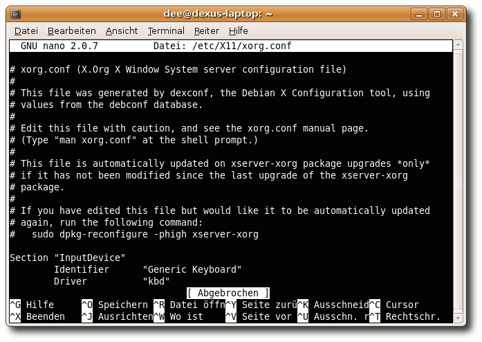
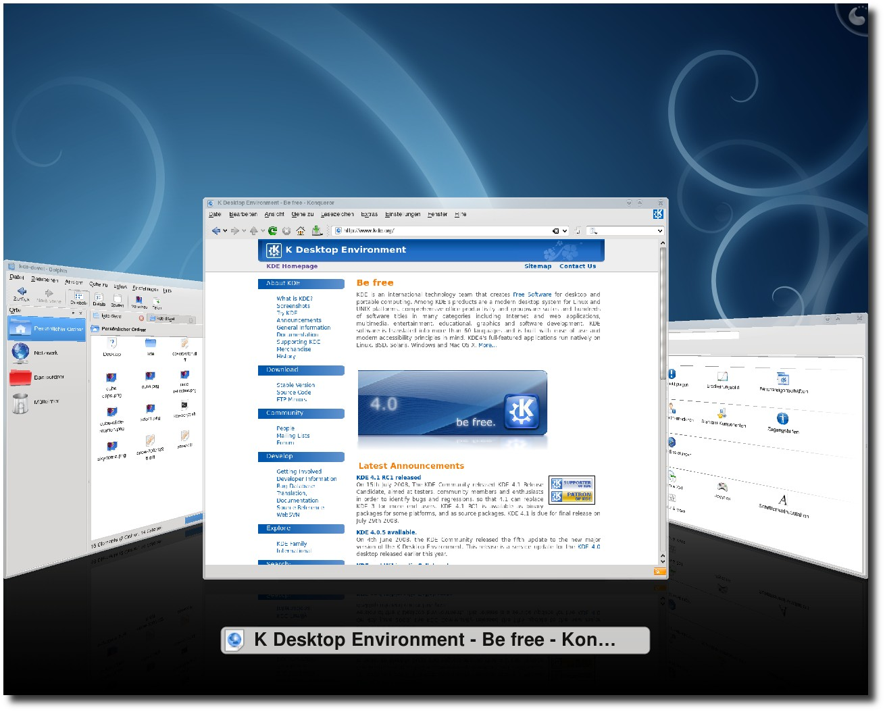

freiesMagazin August 2008
Topthemen dieser Ausgabe
Ein erster Blick auf KDE 4.1
Anfang Januar konnte das KDE-Projekt nach mehr als zwei Jahren Entwicklungszeit mit Version 4.0 das erste Release der neuen 4er-Serie präsentieren. Nun ein halbes Jahr später hat KDE mit der Veröffentlichung von Version 4.1 Ende Juli einen weiteren Meilenstein erreicht. Zeit für einen Blick auf die neuen Funktionen. (weiterlesen)
Ubuntu 8.04 LTS - Ubuntu für drei Jahre
Zum zweiten Mal veröffentlichte Canonical eine LTS-Version der Linux-Distribution Ubuntu. Version 8.04 LTS soll Version 6.06 LTS ablösen und bietet fünf Jahre offiziellen Support auf dem Server und drei Jahre in der Desktop-Variante. Canonical machte klar, dass es damit verstärkt in den Unternehmenssektor vorstoßen will, in dem bisher Red Hat und Novell führend sind. Ob dies mit der neuen Distribution gelingen kann, liest man im Artikel. (weiterlesen)
Zum Index
Inhalt
Nachrichten
Distributionen aktuell
Neues aus der Welt der Mobilgeräte
Kernel-Rückblick
Studie: ,,Paketverwaltungen sind nicht immer sicher''
Sicherheitslücke in verschiedenen DNS-Systemen
Online-Screenreader WebAnywhere liest vor
Version 3.0 der Creative-Commons-Lizenzen erschienen
Multipointer-Unterstützung im X-Server
Unterhaltsame Sammlung an Linux-Spielen
Anleitungen
Wenn die Webcam nicht mit dem DVB-T-Stick will
Versionsverwaltung mit Git
Software
Vim - Ein Schnelleinstieg
nano - Ein Konsoleneditor
Linux allgemein
Ein erster Blick auf KDE 4.1
Ubuntu 8.04 LTS - Ubuntu für drei Jahre
Interview mit Projektmitarbeitern von easys GNU/Linux
Interna
Editorial
Leserbriefe
Lösungen zu den nano-Übungen
Konventionen
Impressum
Soweit nicht anders angegeben, stehen alle Artikel und Beiträge in freiesMagazin unter der GNU-Lizenz für freie Dokumentation (FDL). Das Copyright liegt beim jeweiligen Autor. freiesMagazin unterliegt als Gesamtwerk ebenso der GNU-Lizenz für freie Dokumentation (FDL) mit Ausnahme von Beiträgen, die unter einer anderen Lizenz hierin veröffentlicht werden. Das Copyright liegt bei Eva Drud. Es wird die Erlaubnis gewährt, das Werk/die Werke (ohne unveränderliche Abschnitte, ohne vordere und ohne hintere Umschlagtexte) unter den Bestimmungen der GNU Free Documentation License, Version 1.2 oder jeder späteren Version, veröffentlicht von der Free Software Foundation, zu kopieren, zu verteilen und/oder zu modifizieren. Die xkcd-Comics stehen separat unter der Creative Commons-Lizenz CC-BY-NC 2.5. Das Copyright liegt bei Randall Munroe.
Zum Index
Editorial
Liebe Leserin, lieber Leser! Als Linux-Nutzer konnte man für eine lange Zeit nur müde über die Probleme der Windows-Benutzer lächeln: ,,Viren? Würmer? Trojaner? - Wie buchstabiert man das?'' Nach den Meldungen der letzten Wochen fühlt man sich aber nicht mehr ganz so sicher. Zwar wird man nicht von bösartigen Programmen angegriffen, dennoch ermöglichen verschiedene Lücken, dass nicht jede Benutzereingabe zu dem führt, was der Benutzer wollte. Vorletzten Monat war es die OpenSSL-Lücke in einem Debian-Paket (siehe ,,Sicherheitslücke in OpenSSL bei Debian und Derivaten'', freiesMagazin 06/2008 (Link)), diesen Monat ist es ein Fehler im DNS-Protokoll, der einem falsche Webseitenweiterleitungen unterschieben kann (siehe ,,Sicherheitslücke in verschiedenen DNS-Systemen''). Dazu kommt noch, dass eine Studie ergeben hat, dass die freien Paketverwaltungssysteme nicht sicher sind und leicht manipuliert werden können (siehe ,,Paketverwaltungen sind nicht immer sicher''). (Wie leicht ,,leicht'' ist, ist aber eine Frage des Standpunktes.) Da fragt man sich als Benutzer: Ist mein System noch sicher? Die richtige Antwort wäre wohl: ,,So sicher, wie es eben geht.'' Oft wird vergessen, dass Menschen Software programmieren. Menschen machen Fehler und diese Fehler wirken sich - nicht immer, aber manchmal - negativ auch auf das eigene System aus. Ist Linux sicherer als ein anderes Betriebssystem XY? Zu dieser Frage kann man wohl monatelang philosophieren und dennoch keinen Konsens finden - vor allem, wenn sowohl Linux- als auch XY-Benutzer an dieser lustigen Diskussionsrunde teilnehmen würden. Vorerst können wir nur darauf vertrauen, dass die Fehler in der Software - und davon gibt es noch Massen - schneller gefunden werden, als dass eine Lücke bösartig ausgenutzt wird. Wir müssen hoffen, dass die kriminelle Energie einiger Menschen nicht auf uns fällt, treffen kann es im Endeffekt aber jeden, wie die DNS-Lücke gezeigt hat. Dies erinnert mich an das Auftauchen an W32.Blaster/Lovesan vor fünf Jahren (Link), an den sich einige Windows-Benutzer vielleicht erinnern können. Auch als selbsternannter ,,Mein Windows ist sicher, denn ich weiß, was ich tue''-Benutzer traf es mich, weil ich einfach die Firewall für einen Test den Tag zuvor ausgeschaltet hatte. Beruhigend war im Endeffekt, dass auch einige große Firmen von dem Wurm ,,überrannt'' wurden und ich nicht der einzige Blöde war. Das Beispiel zeigt, dass man - unter Windows vielleicht etwas mehr als unter anderen Betriebssystemen - sein System immer im Auge behalten sollte. Aber selbst wenn man dies tut, wie die meisten Firmen es damals sicherlich taten, ist man nicht immer sicher, weil man selbst nicht die Lücke ist. Mit diesen - vielleicht nicht sonderlich - beruhigenden Worten kann ich Ihnen nur noch viel Spaß mit der neuen Ausgabe von freiesMagazin wünschen. Ihre
| D. Wagenführ |
http://www.freiesmagazin.de/freiesMagazin-2008-06
http://www.heise.de/security/news/meldung/39347
Zum Index
Leserbriefe
Für Leserbriefe steht unsere E-Mailadresse
Vielen Dank für den sehr interessanten Artikel von Holger Daut in freiesMagazin 07/2008. Darin schreiben Sie:
,,Es kann auch vorkommen, dass das Programm zwar ausgelesen wird, aber nicht der anzuzeigende Dateiinhalt. Das passiert zum Beispiel bei PDF-Dateien. Einzige Abhilfe ist es, die PDF-Datei in ein kompatibles Format zu konvertieren. Hierzu kann man die OCR-Software ,,Abby Fine-reader'' für Windows benutzen. Im übrigen ist eine OCR-Software für Blinde unbedingt notwendig, um beispielsweise Briefe und andere Dokumente in Papierform lesen zu können. Leider ist dem Autor keine OCR-Software für Linux bekannt. Es soll zwar eine Linuxversion des Fine-readers geben, die aber sehr teuer ist und nur Firmen vorbehalten sein soll.''
Ich lese freiesMagazin mittels KPDF und kann mit dem Auswahlwerkzeug Texte aus einem PDF in die Zwischenablage kopieren und diese Texte dann in ein Texteditor hineinkopieren. Soweit ich weiß, besteht unter KDE die Möglichkeit, sich die Zwischenablage vorlesen zu lassen. Sollte es nicht möglich sein, mittels eines Skriptes die Texte eines PDF direkt in die Zwischenablage zu laden und sie sich vorlesen zu lassen ohne OCR-Technologie zu benutzen?
In der Ankündigung zu KDE 3.4 (Link) steht u. a. zu lesen:
- Text-to-speech system with support built into Konqueror, Kate, KPDF and the standalone application KSayIt
- Support for text to speech synthesis is integrated with the desktop
- KPDF now enables you to select, copy & paste text and images from PDFs, along with many other improvements
GOCR ist, soweit ich weiß, in den Ubuntu-Quellen. Zumindest weiß ich, dass dort eins zu finden ist, da ich zuhause eins auf meinem PC verwendet habe, um aus einem Dokument den Text zu bekommen. Man muss aber eine hohe Scanauflösung wählen, damit das Programm einigermaßen zuverlässig arbeitet. Selbst dann hatte ich noch einige Fehler, obwohl das Blatt total glatt und die Schrift sehr deutlich war. Steffen freiesMagazin: Das sind viele Vorschläge für die Texterkennung unter Linux; herzlichen Dank dafür. Es wäre toll, wenn jemand, der diese Software gut kennt, ein paar Zeilen dazu schreiben könnte, sodass wir eines der Programme in der nächsten Ausgabe von freiesMagazin vorstellen können. Euer Artikel zur Barrierefreiheit in der Ausgabe 07/2008 war einsame Spitze! Viel besser kann man nicht vor Augen führen, welche ,,Hürden'' behinderte Menschen am Computer bzw. im Web zu überwinden haben bzw. wie manche Menschen mit ihrer Behinderung umgehen und diese meistern. In Österreich ist im EGov-Gesetz festgeschrieben, dass seit dem 1. Januar 2008 Websites von Behörden barrierefrei zu gestalten sind. Die Reaktionen auf diese ,,Forderung'' waren in vielerlei Hinsicht erschreckend. ,,Wegen den paar ,,Hanseln'' ...'' war nur eine Aussage von vielen, die mich traurig gestimmt haben. Wie Ihr schon in Eurem Artikel geschrieben habt, sind viele Behinderungen nicht schon von Geburt an vorhanden. Unter diesem Aspekt sollte sich jeder an die Nase fassen und darüber nachdenken, dass uns allen heute oder morgen durch einen Unfall ein derartiges ,,Schicksal'' widerfahren kann. Wären wir dann einer von diesen ,,Hanseln'', würden wir die Bemühungen um die Barrierefreiheit bestimmt aus einem anderen Blickwinkel betrachten.
Ich möchte daher nochmal Danke sagen für diesen hervorragenden Artikel. Die Website von linux-fuer-blinde.de ist auf jeden Fall einen Besuch wert. Peter Liebl Da mir Barrierefreiheit wichtig ist, habe ich die Artikel dazu mit Interesse gelesen.
Zum Text ,,Was ist Barrierefreiheit und wozu überhaupt?'' möchte ich ergänzen, dass sich Barrierefreiheit bei weitem nicht nur auf Menschen mit Einschränkungen bezieht. (Klar, dies war der Fokus in dieser Ausgabe.) Dennoch gehören eingeschränkte Programme genauso dazu. Muss oder will ich zum Beispiel einen Textbrowser (wie w3m oder links) verwenden, dann bin ich genauso eingeschränkt. Jedoch nicht durch mich selbst, sondern durch ein Programm (das ich vielleicht verwenden muss, weil ich aus irgendwelchen Gründen keine Alternativen habe). Jedenfalls kann ich, als körperlich und geistig ,,voll funktionsfähiger'' Mensch, manche Websites auch nicht verwenden. Auch als überzeugter Free-Software-Verfechter stoße ich auf Barrieren: Videostreams, die nicht in freien Formaten zur Verfügung gestellt werden. Genauso die proprietären Office-Formate oder Multimedia-Inhalte mit Kopierschutz. Für mich ist also Barrierefreiheit genauso wichtig, nicht nur für behinderte Menschen. Oder anders gesagt: Ich bin in gewisser Weise auch ein ,,Behinderter'', denn es hindert mich etwas daran, alle ,,Features'' nutzen zu können.
Dann noch etwas, das eher zum Artikel ,,Barrierefreies GNU/Linux'' passt: Erst vor kurzem bin ich auf edbrowse (Link) gestoßen, als ich Textbrowser suchte. Das ist ein ,,ed'' mit dem man zusätzlich im Web surfen und Emails schreiben kann. Ich habe mich dann gefragt, wie man mit einem solchen Programm produktiv sein kann, gerade als Browser. Vor allem weil ein Nutzer meinte, dass das Programm das beste sei, was ihm bis jetzt untergekommen sei. Dies klärte sich dann ziemlich schnell, als ich herausfand, dass der Autor des Programms blind ist und somit natürlich andere Anforderungen an Programme hat. Dann war der Einsatz von ,,ed'' als Basis ganz logisch! Er entwickelt auch eine Sprachsoftware (Link) für GNU/Linux und Windows.
Auf seiner Website finden sich auch Texte, die sehr lesenswert sind (Link) (Link). Markus Schnalke freiesMagazin: Vielen Dank für Ihren Kommentar. Selbstverständlich können Behinderungen auch bewusst von den Anwendern auf sich genommen werden bzw. in dem Fall von extern auf den Anwender einwirken. Wie Sie selbst sagen, ist dies aber eine andere Art von Behinderung. Wir wollten uns in dem Artikel speziell auf körperliche Behinderungen beschränken. Der Textbrowser edbrowse klingt in der Tat interessant. Vielleicht hat jemand Erfahrung mit dem Programm und möchte dazu etwas schreiben. Die freiesMagazin-Redaktion ist über
Ich finde gut, dass Ihr Euch die Arbeit mit dem Magazin macht. Wird jedesmal besser, finde ich. In der Juliausgabe gefiel mir besonders die Expertenecke. So kurze nützliche Konsolentutorials eignen sich echt gut, um Kenntnislücken zu füllen. :) Weiter so. Emkay freiesMagazin: Das ,,Weiter so'' haben wir gleich ernst genommen und präsentieren Ihnen in dieser Ausgabe gleich zwei Artikel zu Konsoleneditoren, die einem sicher helfen werden, Dateien in einem Terminal zu bearbeiten. Cartoons
Zuerst mal ein großes Lob für Euer Magazin, ich lese es mit Vergnügen, Gestaltung und Themen sind wirklich gelungen. Nun zum eigentlichen Grund meines kurzen Schreibens: Ich wollte wegen der Kritik an den Cartoons von xkcd.com in den Leserbriefen der aktuellen Ausgabe aus meiner persönlichen Perspektive anmerken, dass mir die Comics sehr gut gefallen. Der Humor passt meiner Ansicht nach bestens in Euer Magazin, die Themen sowieso. Mal etwas anderes als andere Cartoons, auch graphisch. Ich kann natürlich schon verstehen, wenn das nicht jedermanns Sache ist, sowohl gestalterisch als auch wegen der sprachlichen Feinheiten. Ich für meinen Teil wünsche mir hier aber keinerlei Veränderungen. Daniel Hurtado In der Ausgabe 07/2008 wurden die xkcd-Karikaturen kritisiert. Also ich persönlich muss sagen, dass ich ein sehr großer Fan davon geworden bin. Seit ich sie durch freiesMagazin entdeckt habe, bin ich regelmäßig auf der Website und kann mich immer wieder über neue schöne Werke von Randall Munroe freuen. Daniel Rentzsch Vielen Dank für Euer Engagement. Ich würde mich zwar nicht mehr als Anfänger bezeichnen, aber unter den Artikeln finde auch ich immer noch Neues. Die Comic-Strips sind eine prima Auflockerung. Weiter so! Wolfram Riedel freiesMagazin: Es ist schön zu wissen, dass auch unsere Leser den sprachlichen Witz und die Feinheiten der xkcd-Comics zu schätzen wissen - an dieser Stelle können wir Sie alle beruhigen, dass (sofern die Lizenz es auch in Zukunft zulässt) xkcd nicht aus freiesMagazin verschwinden wird. Linpus Linux Lite
Das System lässt sich installieren, selbst wenn auf der Linpus-Seite das Gegenteil steht. Hierzu gibt es auch ein Tutorial (Link). Ingo Schäfer freiesMagazin: Vielen Dank für den Link zur Anleitung. Experimentierefreudige Linuxnutzer werden daran sicher Gefallen finden. Newsletter
Der monatliche Abstand zwischen den Ausgaben hat bei mir dazu geführt, dass ich sozusagen ,,vergessen'' habe, nach der neuen Ausgabe zu schauen. Ich persönlich fände einen Newsletter, je nach System mit Link / Anhang, spitze, um auf das Erscheinen des neusten Magazins hinzuweisen. Frank Wagener freiesMagazin: Einen Newsletter haben wir zwar nicht, aber einen RSS-Feed (Link). Diesen können Sie in einigen Browsern als dynamisches Lesezeichen speichern, aber auch in vielen E-Mailprogrammen abonnieren, sodass sie keine Neuigkeit mehr verpassen. Natürlich ist auch die Verwendung eines Feedreaders nicht falsch. Lob
Ich habe wirklich Stunden, ja schon fast Tage, im Internet verbracht, um dieses dämliche Problem mit ALSA zu lösen, dass, wenn man die Kopfhörer einsteckt, die Laptop-Boxen nicht muten. Zufällig habe ich mir dann ein paar Ausgaben des Magazins heruntergeladen und am Abend gelesen. In der Juniausgabe bei dem Artikel über Hardy und den Sound nach dem Ruhezustand bin ich dann fündig geworden, habe die Anleitung befolgt und - es ging! Dafür habe ich Tage umsonst in Foren verbracht. Johannes Rothe freiesMagazin: Herzlichen Dank für Ihre E-Mail. Wir lesen sehr gerne, wenn Anleitungen aus dem Magazin bei Problemen mit Soft- und Hardware helfen. Vor allem den Autor Christian Imhorst wird dies freuen. Links
http://www.kde.org/announcements/announce-3.4.php
http://de.wikipedia.org/wiki/OCRopus
http://de.wikipedia.org/wiki/GOCR
http://de.wikipedia.org/wiki/Tesseract
http://edbrowse.sf.net
http://www.eklhad.net/linux/jupiter/
http://eklhad.net/cli.html
http://www.eklhad.net/linux/app/philosophy.html
http://www.pilotennetz.de/computing/tutorials/linpus_linux_lite_harddrive_install/
http://www.freiesmagazin.de/rss.xml
Die Redaktion behält sich vor, Leserbriefe gegebenenfalls zu kürzen. Zum Index
Distributionen aktuell
Es gab letzten Monat viele neue Versionen der verschiedensten Linux-Distributionen. Der Artikel soll die Neuigkeiten kurz zusammenfassen. CentOS
Die Ende Juni erschienene Distribution CentOS 5.2 steht nun auch als Live-CD zur Verfügung. Neben den normalen Desktop-Programmen wie OpenOffice.org 2.3.0, Firefox 3.0, Thunderbird 2.0 und Pidgin 2.3.1 stehen auch Systemrettungsprogramme wie Memtest86, QtParted und LVM- und RAID-Kommandozeilenwerkzeuge zur Verfügung. Weitere Programme, bekannte Probleme und die Download-Links findet man in den Release Notes (Link). Debian
Seit Ende Juli sind die Paketquellen von Debian 5.0, Codename Lenny, eingefroren, sodass sich die Entwickler auf die Veröffentlichung der neuen Version im September vorbereiten können. Neue Funktionen gibt es demnach nicht mehr, es werden ausschließlich Fehler in den Paketen behoben. Ein weiteres Ziel ist unter anderem auch die Anpassung des Init-Systems, damit es mit neueren Systemen wie Upstart, das Prozesse gleichzeitig starten kann, zurechtkommt (Link). Den neuen Installer hat sich Heike Jurzik vorgenommen (Link). Von Debian 4.0 Etch ist die vierte Aktualisierung erschienen, die einige Sicherheitslücken und andere schwerwiegende Fehler ausbessert. Erstmals wird auch ein aktualisierter Kernel, der neue Hardwaretreiber mitbringt, zur Verfügung gestellt. Die gesamten Änderungen kann man in den Release Notes (Link) nachlesen (Link). DragonFly
Mit DragonFly BSD 2.0 stellt das Projekt eine neue Version ihres FreeBSD-Derivats vor, welches vor allem durch das neue Dateisystem ,,Hammer'' bestechen soll. Daneben gab es auch Änderungen am Kernel und den Treibern. Auf der Homepage (Link) kann eine Live- und zugleich Installations-CD heruntergeladen und getestet werden (Link). Elive
Einen Monat nach der Entwicklerversion 1.7.7 können die Elive-Entwickler bereits mit Version 1.7.10 aufwarten. Verbessert wurden unter anderem die Prism2-WLAN-Treiber, die Grafiktreiber von ATI und Nvidia in neuen Versionen und diverse Treiber für Laptop-Komponenten. daneben gab es auch Änderungen an e17, X.org und Flash (Link). Fedora
Fedora hat für ihre erst kürzlich erschienene Version 9 neue Re-Spins (Installations-DVDs) veröffentlicht. Diese enthalten alle bis zum 18. Juli behobenen Bugfixes und Sicherheitsupdates. Die DVDs stehen für 32-Bit- und und 64-Bit-Rechner zur Verfügung (Link). Foresight Linux
Gleich zwei Veröffentlichungen gab es bei Foresight-Linux. Version 2.0.3 bringt alle Neuerungen von GNOME 2.22.3, Banshee 1.0, Kernel 2.6.25.9 sowie einen neuen Loginmanager mit (Link). Mit Version 2.0.4, die ein neues Theme und einige Bugfixes beinhaltet, wurde auch die Foresight GNOME Lite Edition eingeführt. Diese findet nun auf einer CD Platz, kommt dafür aber ohne OpenOffice.org aus und ist darüber hinaus nur in Englisch verfügbar (Link). Gentoo
Nach einigen internen Schwierigkeiten konnte Gentoo die Version 2008.0 veröffentlichen. Die größten Neuerungen sind der aktualisierte Installer, eine bessere Hardware-Unterstützung, aktualisierte Pakete und eine Komplettüberarbeitung der Gentoo-eigenen Profile. Erwähnenswert ist auch, dass die Live-CD nun mit Xfce anstelle GNOME daherkommt. Eine Live-DVD gibt es aktuell noch nicht (Link). GoblinX
Die Slackware-basierende Distribution GoblinX ist nach einem knappen halben Jahr Entwicklungszeit in der neuen Version 2.7 Standard erschienen. Seit dem Release Candidate wurden vor allem kleinere Fehler ausgebessert und neue Versionen von Programmen eingespielt. GoblinX Standard enthält die fünf Fenstermanager KDE, Fluxbox, Xfce, Enlightenment und WindowMaker (Link). Kurz zuvor wurden auch bereits die kleineren Versionen Mini (nur mit Xfce) und Micro (nur mit Fluxbox) veröffentlicht (Link). Zusätzlich wurde auch die neue GoblinX Premium-Version 2008.2 herausgegeben, die mit noch mehr Funktionen auswarten kann und als eigentliches Desktop-Betriebssystem gedacht ist. Die Version ist aber nur käuflich zu erwerben (Link). IPCop
Seit dem 24. Juli 2008 steht IPCop (Link) in Version 1.4.21 zur Verfügung. Die Updates (1.4.19 bis 1.4.21) wurden kurz hintereinander veröffentlicht und beinhalten verschiedene Patches und eine neue Kernelversion (2.4.36), sodass ein Neustart nach der Installation zwingend erforderlich ist. Als wichtigste Änderung ist ein Patch für dnsmasq eingeflossen mit dem die Anfang Juli entdeckte DNS-Sicherheitslücke (siehe ,,Sicherheitslücke in verschiedenen DNS-Systemen'') geschlossen werden konnte (Link). Linspire und Xandros
Mehr oder weniger überraschend erschien Anfang Juli die Meldung, dass Xandros Linspire übernehmen will. Demnach will Xandros Linspire und alle seine Marken - die Systeme Linspire und Freespire, sowie die Online-,,Paketverwaltung'' Click'n'Run (siehe Artikel ,,Linspires Click'n'Run im Beta-Test'', freiesMagazin 01/2008 (Link)) - unangetastet lassen, CNR wird aber um Xandros-Pakete erweitert. Beide Unternehmen verbindet ihr Windows-ähnliches System und natürlich die umstrittenen Patentabkommen mit Microsoft (Link). Linux Mint
Bereits Anfang Juni ist Linux Mint 5, Codename ,,Elyssa'', in den Versionen ,,Main'' und ,,Light'' (ohne proprietäre Komponenten) erschienen. Nun wurde das System auch auf Xfce angepasst und der erste Release Candidate der ,,XFCE Community Edition'' veröffentlicht. Neben kleineren Anpassungen am Aussehen wurde eine Option eingebaut, die Compiz aktiviert/deaktiviert und beim Login starten lässt. Weiterhin wurde vor allem die Handhabung vereinfacht, sodass es nun möglich ist, True-Type-Schriften per Rechtsklick zu installieren, einen Ordner per Rechtsklick als Root zu öffnen, die Drucktaste erstellt automatisch ein Bildschirmfoto und vieles anderes. Die gesamten Änderungen kann man den Release Notes entnehmen (Link). Mandriva
Mit Mandriva 2009.0 Alpha 2 ist die zweite (aber erste öffentliche) Alpha-Version der voraussichtlich im Oktober erscheinenden Version Mandriva Linux 2009.0 erschienen. Wie viele andere Distributionen auch setzt Mandriva nun auf KDE 4.1 (Beta 2) anstelle KDE 3 und hat ebenfalls die neueste Version von GNOME 2.23.4 im Gepäck. Natürlich wurde auch der Kernel aktualisiert und die neuesten (auch proprietären) Treiber eingespielt (Link). Ende des letzen Monats ist dann zusätzlich noch die erste Beta-Version erschienen. Sowohl KDE mit der finalen Version 4.1 als auch GNOME 2.23.5 sind inzwischen enthalten, wobei die Integration von KDE 4.1 noch nicht ganz abgeschlossen ist. Für die nächste Beta-Version sind noch zahlreiche Änderungen geplant, vor allen an den Mandriva-Tools. Die neue Testversion steht als DVD für 32-Bit- und 64-Bit-Rechner zur Verfügung, es wird aber auch eine Mini-CD und die Live-CD ,,Mandriva One'' mit KDE 4 und GNOME angeboten (Link). openSUSE
Der openSUSE Build Service wurde mit Version 1.0 fertig gestellt und packt automatisch Quellcode in verschiedene Paketformate und verschiedene Architekturen. Aktuell werden Pakete für die Distributionen openSUSE, Suse, Debian, RedHat, Fedora, Mandriva und Ubuntu unterstützt (Link). Mit der ersten Alpha-Version von openSUSE 11.1 startet die Entwicklung am Nachfolger von Version 11.0, das vor einem Monat veröffentlicht wurde. Wie man den Release Notes (Link) aber entnehmen kann, ist das System noch hoch instabil und sollte wirklich nur zu Testzwecken eingesetzt werden (Link). PC/OS
Mit PC/OS ist eine neue Ubuntu-basierende Linux-Distributionen erschienen, die sich beim Design an BeOS orientieren will. Als Desktopumgebung kommt Xfce zum Einsatz und ist vor allem für Multimedia-Anwendungen ausgelegt. So werden beispielsweise diverse Codecs bereits mitgeliefert. Aber auch Programmierer sollen nicht zu kurz kommen, so werden Mono, Ruby on Rails, aber auch klassische Sprachen wie C und C++ unterstützt (Link). Ubuntu
Von Ubuntu 8.10 ,,Intrepid Ibex'' ist letzten Monat die zweite und dritte Alpha-Version erschienen. In der zweiten Alpha wurden vor allem viele Pakete von Debian eingepflegt sowie Kernel und X.org auf den neuesten Stand gebracht (Link). In der Alpha 3 gab es ähnliche Änderungen (Link). Ulteo
Das auf Ubuntu basierende Ulteo Application System ist in einer finalen Version mit Codename ,,Sirius'' erschienen. Die Live- und Installations-CD orientiert sich stark an Kubuntu, bringt aber einige extra Anwendungen für Online- und Mobildienste mit (Link). Wichtiger Hinweis: Alpha- und Beta-Versionen sind nicht für den täglichen Einsatz, sondern nur für Entwickler und Tester gedacht! (dwa, tzi) Links
http://wiki.centos.org/Manuals/ReleaseNotes/CentOSLiveCD5.2
http://www.linux-magazin.de/news/freeze_fuer_debian_lenny
http://www.linux-magazin.de/online_artikel/debian_installer_fuer_lenny_beta_2
http://www.debian.org/News/2008/20080726
http://www.pro-linux.de/news/2008/12979.html
http://www.dragonflybsd.org/
http://www.pro-linux.de/news/2008/12954.html
http://www.elivecd.org/Main/News/elive-development-1.7.10-released
http://www.golem.de/0807/61217.html
http://lists.rpath.org/pipermail/foresight-distro/2008-July/000299.html
http://lists.rpath.org/pipermail/foresight-distro/2008-July/000300.html
http://www.linux-magazin.de/news/gentoo_2008_0_mit_neuem_installer
http://distrowatch.com/?newsid=04986
http://www.pro-linux.de/news/2008/12892.html
http://distrowatch.com/?newsid=05015
http://www.ipcop.org
http://www.ipcop-forum.de/forum/viewtopic.php?f=11
http://www.freiesmagazin.de/freiesMagazin-2008-01
http://www.desktoplinux.com/news/NS3046495745.html
http://www.linuxmint.com/rel_elyssa_xfce.php
http://www.pro-linux.de/news/2008/12919.html
http://www.pro-linux.de/news/2008/12992.html
http://www.desktoplinux.com/news/NS4221997017.html
http://lists.opensuse.org/opensuse-announce/2008-07/msg00022.html
http://www.pro-linux.de/news/2008/12976.html
http://www.desktoplinux.com/news/NS3507625141.html
http://www.pro-linux.de/news/2008/12927.html
http://ikhaya.ubuntuusers.de/2008/07/25/intrepid-ibex-alpha-3-erschienen/
http://www.pro-linux.de/news/2008/12962.html
Zum Index
Neues aus der Welt der Mobilgeräte
Netbooks, UMPCs und MIDs
Der Monat Juli könnte unter Umständen als der Monat der Netbooks in die Geschichte des Jahres 2008 eingehen. Nie zuvor gab es so viele Nachrichten, Berichte und Tests wie in den letzten fünf Wochen. Immerhin 21 Geräte mit Linux listet LinuxDevices aktuell auf ihrer Seite auf (Link). Allen voran muss man sicherlich Aldi nennen, die diesen Monat mit dem Medion Akoya Mini E1210 das erste ,,Volksnetbook'' auf den Markt gebracht haben. Dies zeigt, dass der Bedarf nach einem Gerät zwischen PDA und Notebook tatsächlich da ist. Das Gerät ist fast baugleich zum MSI Wind U100, welches aber erst ab August erhältlich sein soll. Die ,,Innenausstattung'' klingt angenehm: Intel Atom-Prozessor N270 mit 1,6 GHz, 1 GB DDR2-RAM Hauptspeicher, 80 GB Festplatte (keine Solid State Disk!), WLAN 802.11 a/b/g mit einem Ralink-Chip, Netzwerkanschluss von Realtek und integrierte Intel-Grafik. Mit 1024x600 Bildpunkten soll das Display auch bei direkter Sonneneinstrahlung ein gutes Bild werfen. Tests zu dem Gerät gibt es von allen größeren Newsseiten wie zum Beispiel Golem.de (Link) oder heise mobil (Link) und obwohl das Akoya mit Windows XP ausgeliefert wird, haben einige Seiten auch die Linux-Kompatibilität getestet. So wollte heise open Ubuntu 8.04, Fedora 9, OpenSolaris und openSUSE 11.0 auf dem Gerät installieren, aber nur openSUSE ließ sich dazu bewegen (Link). Gleiche Erfahrungen machte auch das Linux-Magazin, die aber zusätzlich Ubuntu 7.10 installieren konnten (Link). Die Erfahrungen damit hat Marcel Hilzinger aus dem Linux-Magazin-Testlabor in einem Video festgehalten (Link). Das MSI Wind U100 ist wie oben erwähnt fast baugleich zum Akoya Mini E1210 und soll diesen Monat in Deutschland auf den Markt kommen. Unterschiedlich ist das WLAN-Modul von Realtek (anstelle Ralink) und das Gerät bringt Bluetooth 2.0 mit (Link) (Link).
Das Acer Aspire One.
© Rico Shen (CC-BY-SA-3.0)
{kind=link}
Ungefähr zeitgleich mit dem MSI-Gerät hat auch Acer sein erstes Mini-Notebook Aspire One veröffentlicht. Auch im Acer-Gerät steckt ein Intel-Atom-Prozessor mit 1.6 GHz und integrierter Intel-Grafik, 512 MB oder 1 GB Hauptspeicher, 8 GB Solid-State-Disk (mit optionaler 80 GB Festplatte) und einem 8,9-Zoll-Display mit 1024x600 Pixeln. WLAN und eine Webcam sind natürlich auch vorhanden. Die große Besonderheit des Aspire One ist das vorinstallierte Linpus Linux Lite (siehe Artikel ,,Linpus Linux Lite - Ein Betriebssystem für mobile Computer'', freiesMagazin 07/2008 (Link)). Erste Tests zu dem Gerät findet man bei Golem.de (Link) und Linux-Magazin (Link), wobei die Letztgenannten auch wieder einen Video-Test zeigen, in dem ebenfalls openSUSE 11.0 und Ubuntu 8.04.1 auf dem Aspire One getestet wurden (Link). Losgetreten hat diese Netbook-Lawine natürlich Asus mit seinem EeePC 4G im November 2007 (Link). Nachfolgend kam der EeePC 900 auf dem Markt, der in das Modell 901 übergangen ist und nun durch die Modelle 904 und 1000 ergänzt wird. Der Asus EeePC 1000 kostet 700 US-Dollar und bringt ein angepasstes Xandros Linux als Betriebssystem mit, die Oberfläche lässt sich durch Tabs (,,Internet'', ,,Work'', ,,Learn'', ,,Play'', ,,Settings'' und ,,Favorites''), die ziemlich stark an Linpus Linux Lite erinnern, steuern. Der Bildschirm misst 10 Zoll, intern ist eine 1,6 GHz Intel Atom-CPU, 1 GB RAM und eine 40 GB Solid State Disk verbaut - diese Speichergröße ist ein Novum auf dem Markt der Netbooks (Link). Vom kleinen Bruder 904 gibt es keine Linux-Version und es bringt nur eine Intel Celeron-CPU mit, soll aber preislich besser liegen (Link). Der neue Asus EeePC 901 wird im übrigen auch auf Intels Atom-Prozessor setzen, bringt einen 8,9-Zoll-Bildschirm, 1 GB DDR2-RAM, eine 12 GB oder 20 GB Solid-State-Disk, Webcam, Bluetooth und WLAN mit (Link).
Der Asus EeePC 901.
© Rico Shen (CC-BY-SA-3.0)
{kind=link}
In einem (englischen) Video-Test haben NCIX die Netbooks MSI Wind U100, Acer Aspire One, Asus EeePC 901 und HP 2133 gegeneinander antreten lassen (Link). In Planung ist auch ein Netbook von Fujitsu-Siemens namens Amilo Mini, welches ab Ende August auf dem Markt kommen soll. Es hat - wie die anderen Mitbewerber - einen Intel Atom-Prozessor integriert und besitzt ein 9-Zoll-Display. Fujitsu-Siemens setzt entgegen der meisten anderen nur auf Windows XP und bietet keine Alternative an - was natürlich nicht bedeutet, dass auf dem Gerät kein Linux läuft (Link). Daneben ist auch ein neues FSC Lifebook mit der Bezeichnung U2010 in Arbeit. Ebenfalls mit Atom-CPU, 1 GB RAM und 60 GB Festplatte bietet das Lifebook die Besonderheit, das Display um 180° drehen und umklappen zu können. Auf diese Art lässt sich leicht ein Tablet-PC aus dem Gerät machen (Link). Ob diese Geräte aber wirklich erscheinen werden, hängt wohl auch von der Partnerschaft zwischen Siemens und Fujitsu ab, die aktuell etwas bröckelt (Link). Das erste Netbook, welches auch als Tablet-PC benutzt werden kann, veröffentlicht Fujitsu-Siemens damit aber nicht, denn Gigabyte kam hier mit seinem M912 etwas zuvor. Golem.de hat das Gerät unter die Lupe genommen, wobei bei dem Test ein Vorserienmodell zum Einsatz kam, welches mit Windows Vista Home Basic lief. Im Inneren arbeitet eine Intel Atom-CPU mit 1,6 GHz, 1 GB RAM und 160 GB Festplatte. Das 8,9-Zoll-große spiegelnde Display liefert 1280x768 Bildpunkte (Link). Der eher für Speichermedien bekannte Hersteller Emtec steigt nun auch in das Netbook-Geschäft ein. Das GDium soll im August oder September erscheinen und bringt - kleine Überraschung - keine Intel-CPU mit. Stattdessen wird ein 64-Bit-Loongson-Prozessor mit 900 Mhz zum Einsatz kommen. Die zweite Überraschung ist das eingesetzte Linux, denn hier konnte sich Mandriva einen Platz sichern. Dies ist damit das erste Netbook, auf dem Mandriva Linux zum Einsatz kommen wird. Eine weitere Besonderheit ist die Speicherung der Daten, da sowohl das vorinstallierte Betriebssystem als auch alle späteren Benutzerdaten auf einem 8 GB oder 16 GB kleinen USB-Stick, genannt G-Key, liegen, die man dafür aber leicht umhertragen kann (Link) (Link).

Das Gigabyte M912.
© Rico Shen (CC-BY-SA-3.0)
{kind=link}
Die ganz großen Hersteller lassen sich dagegen etwas Zeit. Immerhin Dell hat ebenfalls für August seine Dell E-Serie angekündigt, die vorerst aber nur auf dem US-amerikanischen Markt erscheinen soll. Der Preis liegt dort bei sehr günstigen 300 US-Dollar (Link). Lenovo geht es noch gemütlicher an und hat nicht einmal ein Gerät angekündigt. Es gibt aktuell nur die Aussage von Ken Wong, General Manager von Lenovo Taiwan, dass Lenovo sich in diese Richtung orientieren will, um damit sowohl den Consumer- als auch den Enterprise-Markt abzudecken (Link). Mobiltelefone
Auch auf dem Mobiltelefon-Markt gibt es ein paar Neuigkeiten, wenn auch nicht in der Masse wie bei den Netbooks. Für viele ist es DAS Open-Source-Handy: Das OpenMoko Neo FreeRunner, der Nachfolger des Neo 1973. Das Gerät ist ab sofort bei einigen deutschen Händlern (Pulster, TriSoft und Golden Delicious Computers) für 350 € erhältlich (Link). Eine speziell angepasste Version des Freerunners bietet Koolu an. Das ,,W.E. Phone'' getaufte Gerät bringt einige Google-Anwendungen wie Gmail, Google Calendar, Google Docs und Google Talk mit. Zusätzlich will man Skype darauf installieren (Link). Ein weiteres Linux-Handy bzw. PDA ist das neue MotoMing A1600 von Motorola, welches aber vorerst nur auf dem chinesischen Markt erhältlich sein wird (Link). Das A1600 basiert auf dem sehr erfolgreichen A1200 (siehe Artikel ,,Motorola A1200 - Das tragbare Linux-System'', freiesMagazin 04/2008 (Link)). Derweil warnt die Free Software Foundation (FSF) vor Apples iPhone 3G. Fünf Gründe werden genannt, wieso man das iPhone meiden sollte, darunter natürlich das Digital Rights Management (DRM) und die Nichtunterstützung freier Formate wie Ogg Vorbis und Theora. Als Alternative wird das Neo Freerunner (siehe oben) empfohlen (Link).
Das OpenMoko Neo Freerunner.
© Flerchjj (GFDL)
{kind=link}
Sonstige Hardware
Mit CherryPal erscheint demnächst ein Mini-PC ohne Monitor, der vor allem durch eine geringe Leistungsaufnahme von 2 Watt bestechen will. Dafür sind im Inneren des Zwerges ein Freescale MPC5121e mobileGT mit 400 MHz und integrierter Grafik, 256 MB DDR2-Ram und 4 GB SSD-Speicher verbaut. Daneben gibt es noch WiFi, zwei USB-, ein Netzwerk- und ein VGA-Anschluss (nur analog). Das System selbst besteht aus einem Debian mit Firefox, über welches man Zugriff auf die Programme in der CherryPalCloud hat. Diese werden nämlich nicht auf dem CherryPal installiert, sondern stehen nur online zur Verfügung - darunter OpenOffice.org, iTunes, ein Media-Player und ein Instant Messenger. Dazu gibt es 50 GB Online-Speicherplatz. Das Gerät kostet ca. 250 US-Dollar (Link). Interessant ist auch das von Trinity Audio Group vorgestellte Multi-Track-Recording-Device namens Indamixx. Dieses basiert auf dem Ultra-Mobile-PC Samsung Q1 und hat einen Intel A110-Prozessor mit 800 MHz, 1 GB RAM, 40 GB Festplatte und ein 7-Zoll-Touchscreen mit 1024x600 Pixeln verbaut (Link). Die Systembasis bildet 64Studio-Linux und bringt neben einem Echtzeit-Kernel in Version 2.6.21 unter anderem die Software Ardour, Audacity, EnergyXT, Hydrogen-Drums (siehe Artikel ,,Audiosoftware Teil 5: Composing'', freiesMagazin 03/2007 (Link)) und Mixxx 1.6 (siehe Artikel ,,Audiosoftware Teil 4: MP3-DJ-ing'', freiesMagazin 01/2007 (Link)). Software
Wie Ende Juli auf der Messe OSCON veröffentlicht wurde, will Intel in Zukunft doch nicht auf Ubuntu für seine Mobile Internet Devices (MIDs) setzen, sondern bevorzugt für Version 2.0 von Moblin (Abkürzung für ,,Mobile Linux'') die Distribution Fedora. Als Grund für den Umstieg wurden technische Anforderungen genannt. So wolle man lieber auf das Paketsystem RPM anstelle DEB setzen. Zusätzlich sei das Community-Interesse bei Moblin 1.0 sehr gering gewesen, was man durch den Umstieg hofft ändern zu können. Moblin 2.0 soll am 19. August 2008 auf dem Intel Developer Forum vorgestellt werden (Link). Google macht dagegen keine guten Schlagzeilen, da es die eigenen Entwickler verärgert. Das Software Development Kit (SDK) für die Plattform Android hatte seit einigen Monaten keine Aktualisierung erfahren, sodass sich die Entwickler mit teilweise uralten, aber vor allem nervenden Bugs herumschlagen mussten. Wie es scheint, gibt es aber Updates für die Software, sind aber nicht allen zugänglich. Nur ein paar Entwickler, die ein Geheimhaltungsabkommen (Non-Disclosure Agreement, NDA) unterzeichnet hatten, haben Zugriff auf die neue Version. So offen, wie Googles Android also eigentlich sein will, ist es nicht (Link). Besser kommt da Google auch nicht die Nachricht gelegen, dass Verizon, ein großer Telekommunikationsanbieter in den USA, demnächst nicht mit Android als Betriebssystem für seine Handys an den Start gehen will, sondern das ,,Konkurrenzsystem'' der LiMo-Foundation bevorzugt. Es dauere aber noch bis 2009, ehe Verizon ein Linux-Handy auf den Markt bringen will (Link). Zum Schluss hat Ars Technica einen Blick auf die OpenMoko-Software (siehe Neo Freerunner oben) geworfen (Link). (dwa) Links
http://linuxdevices.com/news/NS9470290806.html
http://www.golem.de/0807/60827.html
http://www.heise.de/mobil/artikel/110347
http://www.heise.de/open/artikel/110420
http://www.linux-magazin.de/news/kurztest_aldi_notebook_akoya_mini_e1210_mit_linux
http://www.linux-magazin.de/news/video_aldi_notebook_akoya_mit_ubuntu_und_opensuse
http://www.linux-magazin.de/news/msi_wind_u100_besser_als_das_aldi_netbook_akoya
http://linuxdevices.com/news/NS9338451312.html
http://www.freiesmagazin.de/freiesMagazin-2008-07
http://www.golem.de/0807/60947.html
http://www.linux-magazin.de/news/kurztest_acer_aspire_one_mit_linpus_linux
http://www.linux-magazin.de/news/video_acer_netbook_aspire_one_unter_linpus_und_opensuse
http://linuxdevices.com/news/NS3918376159.html
http://www.laptopmag.com/review/laptops/asus-eee-pc-1000-linux.aspx
http://www.linux-magazin.de/news/eee_pc_904_und_eee_pc_1000_asus_nennt_details_zur_naechsten_generation
http://linuxdevices.com/news/NS5440472641.html
http://www.hp2133.de/2008/07/26/hp-2133-im-vergleich-mit-acer-aspire-one-eee-901-und-msi-wind/
http://www.netbux.de/fujitsu-siemens/fujitsu-siemens-amilo-mini-im-video/
http://www.netbux.de/fujitsu-siemens/u2010-das-neue-fujitsu-siemens-lifebook/
http://www.sueddeutsche.de/wirtschaft/artikel/52/185469/
http://www.golem.de/0807/61378.html
http://www.pro-linux.de/news/2008/12949.html
http://club.mandriva.com/xwiki/bin/view/Main/GDiumInfo
http://www.netbux.de/dell/bestaetigt-dell-e-kommt-im-august/
http://news.softpedia.com/news/Lenovo-to-Enter-Netbook-Market-by-Late-September-91078.shtml
http://www.heise.de/open/news/meldung/110105
http://www.linuxdevices.com/news/NS2387774836.html
http://www.linuxdevices.com/news/NS5207559671.html
http://www.freiesmagazin.de/freiesMagazin-2008-04
http://www.pro-linux.de/news/2008/12924.html
http://www.pro-linux.de/news/2008/12951.html
http://www.linuxdevices.com/news/NS7620873212.html
http://www.freiesmagazin.de/freiesMagazin-2007-03
http://www.freiesmagazin.de/freiesMagazin-2007-01
http://www.linuxdevices.com/news/NS3713000918.html
http://www.gulli.com/news/google-android-handy-os-nicht-2008-07-17/
http://www.theregister.co.uk/2008/05/15/verizon_embraces_linux/
http://arstechnica.com/reviews/os/open-moko-software.ars/
Zum Index
Kernel-Rückblick
Kurz vor Veröffentlichung des Kernels 2.6.26 (Link) nahm Torvalds einen UVC-Videotreiber in den Kernel-Tree auf (Link), der noch die neunte Vorabversion notwendig machte. Die wichtigsten Neuerungen gegenüber der Vorversion sind die Portierung von KVM auf IA64-, PPC- und S390-Architekturen, eine erheblich verbesserte Unterstützung für Webcams und Unterstützung für drahtlose, vermaschte Netzwerke (802.11s) (Link). KGDB fand nun als erster Debugger den Weg in den Kernel und der Code für Semaphoren, Mechanismen die exklusive Zugriffe auf den Kernel während bestimmter Vorgänge ermöglichen, wurde nun für alle Architekturen zusammengefasst, wodurch deren Code nun besser zu warten sein wird. Einen sehr guten Überblick liefert Kernel Newbies hierfür (Link). Kurz darauf wurde bereits die Entwicklung von 2.6.27 gestartet. Viele Patches stammen aus linux-next, jedoch nicht alle. Bereits aufgenommen wurden Patches, die einige Aufrufe des Big Kernel Lock eliminieren, einer mittlerweile ungeliebten Locking-Methode des Kernels (siehe ,,Kernel-Rückblick'', freiesMagazin 06/2008 (Link)). Langfristig soll dieser aus dem Kernel komplett verschwinden. Weiterhin aufgenommen wurden die ALSA-Treiber der Version 1.0.17, der WLAN-Treiber iwl-5000, der Intels neue Generation von WLAN-Modulen und die Centrino-2-Plattform unterstützt, und der Webcam-Treiber gspca. Letzterer soll die Funktion vieler Webcams unter Linux gewährleisten. Die Größe der ersten Vorabversion, die etwa eineinhalb mal so groß ist wie die des Vorgängerkernels, sorgte bei Torvalds für Beunruhigung. So machte er sich Gedanken, ob die Änderungen an einem Kernel nicht etwas viel seien oder der Entwicklungszeitraum nicht etwas zu lange (Link). Version 2.6.25.10 brachte in der Zwischenzeit die Korrektur einiger Fehler, die sich auch zum Einschleusen von schädlichem Code ausnutzen ließen, während Kernel 2.6.25.11 nur einen einzigen Patch für x86_64-Systeme bereitstellt (Link). Es ist zu vermuten, dass dieser eine entsprechend kritische Lücke schließt, so raten auch die Entwickler dringend zu einer Aktualisierung (Link). In eine mit 2.6.5.10 in Zusammenhang stehenden Diskussion erlaubte sich Torvalds einen herben verbalen Ausrutscher, als er das OpenBSD-Team als eine ,,Bande masturbierender Affen'' bezeichnete (Link). Dabei ereiferte er sich darüber, den Fokus nur auf Sicherheitslücken zu richten und den höheren Anteil an anderen Fehlern zu vernachlässigen, welcher in Torvalds Augen ebenso schwer wiege. Die Versionsnummerierung des Kernels könnte sich in Zukunft auch ändern. Dies kam als Antwort auf die an Torvalds gestellte Frage, was ihn dazu bewegen könnte, einen 2.7er Kernel-Zweig zu beginnen. Torvalds meinte daraufhin, dass er keinen Grund sehe, zum alten Modell der Kernel-Entwicklung zurückzukehren, stattdessen eher über eine Änderung der Versionsbezeichnung nachdenke (Link). Diese könnte künftig zeitbasiert erfolgen, sodass zum Beispiel 2.6.26 als 2008.7 bezeichnet werden würde. Eine Nummerierung mit nur einer Zahl lehnte er ab (Link), eine Entscheidung hierzu könnte auf dem kommenden Kernel Summit im September erfolgen (Link). (mme) Links
http://kerneltrap.org/Linux/2.6.26_A_Longer-Than-Usual_Release_Cycle
http://kerneltrap.org/Linux/2.6.26-rc9_Enough_Changes_That_We_Needed_Another_-rc
http://de.wikipedia.org/wiki/IEEE_802.11s
http://kernelnewbies.org/Linux_2_6_26
http://www.freiesmagazin.de/freiesMagazin-2008-06
http://kerneltrap.org/Linux/2.6.27-rc1_Pretty_Dang_Busy
http://www.linux-magazin.de/news/kernel_2_6_25_64_bit_systeme_gefaehrdet
http://lkml.org/lkml/2008/7/13/113
http://thread.gmane.org/gmane.linux.kernel/701694/focus=706950
http://thread.gmane.org/gmane.linux.kernel/706578/focus=706626
http://article.gmane.org/gmane.linux.kernel/706900
http://www.linuxfoundation.org/events/kernel
Zum Index
Studie: ,,Paketverwaltungen sind nicht immer sicher''
Laut einer Studie (Link) von Forschern der Universität von Arizona sei es nicht so schwer, die Spiegelserver diverser freier Distributionen zu infiltrieren und alte Pakete an die Benutzer auszuliefern. Um dies zu beweisen, hatte man eine Scheinfirma aufgebaut, die ihre Server zur Spiegelung diverser Distributionspakete bereitstellte. Durch eine unzureichende Prüfung der Distributoren konnten so signierte Pakete ausgeliefert werden, die ohne Weiteres hätten manipuliert (im Sinne von veraltet und mit Sicherheitslücken gespickt) sein können. Die Forscher warnen daher vor einem blinden Vertrauen von Spiegelservern. Man solle sich auf die offiziellen Distributionsserver oder zumindest auf universitäre Server stützen. Zusätzlich ist von einem automatischen Update der Pakete abzuraten. Man solle immer prüfen, welche Pakete installiert werden und ob dies die korrekten und aktuellen Versionen sind. Betroffen von dieser Lücke waren alle getesteten Paketverwaltungssystem (APT, YUM, YaST) und verschiedene Distributionen wie Ubuntu, Fedora, openSUSE, CentOS und Debian. (dwa) Links
http://www.cs.arizona.edu/people/justin/packagemanagersecurity/attacks-on-package-managers.html
http://www.heise.de/open/news/meldung/110908
Zum Index
Sicherheitslücke in verschiedenen DNS-Systemen
Vor etwa einem Monat hat der Sicherheitsexperte Dan Kaminsky angekündigt, auf der kommenden BlackHat-Konferenz eine kritische Sicherheitslücke im Domain Name System (DNS) aufzudecken. In Zusammenarbeit mit den Herstellern aller großen DNS-Server wurden deswegen in einer konzertierten Aktion Updates herausgebracht, die diese Schwäche, die im Protokoll immanent ist, so weit es geht neutralisieren sollen. In den vergangenen Tagen ist diese Lücke dann vorzeitig von anderer Seite aufgedeckt worden und wird nach Berichten stellenweise schon aktiv ausgenutzt, mit dem Ergebnis, dass Angreifer Benutzern ungepatchter DNS-Server falsche Namensauflösungen unterschieben können und damit effektiv z. B. Webseiten verfälschen (sog. Cache-Poisoning-Angriff (Link)). Einen Test, ob man von dem Problem betroffen ist, hat das SANS Institute veröffentlicht (Link). Der Test kann über einen dig-Befehl, falls man seinen DNS-Server bereits kennt, oder webbassiert über DNS-OARC (Link), falls man den DNS-Server nicht kennt, gestartet werden. Bei der Kommandozeilenversion muss man natürlich die IP des benutzten Nameservers einsetzen (im Zweifelsfall einfach @name.ser.ver.ip ganz weglassen, dann wird der Standardserver getestet): $ dig @name.ser.ver.ip +short porttest.dns-oarc.net TXT
Als Ergebnis erhält man die Antwort name.ser.ver.ip is GREAT, name.ser.ver. ip is GOOD oder name.ser.ver.ip is POOR. Im letzteren Fall ist man von dem Problem betroffen und sollte etwas dagegen unternehmen. Da für die unter z. B. Ubuntu verfügbaren Nameserver Bind und DNSmasq Patches bereit stehen, und djbdns von vornherein nicht verwundbar war, betrifft dies insbesondere Leute, die einen Hardware-Router mit Caching-DNS-Server benutzen. Wer das tut und bei dem Test ein ,,POOR'' als Antwort erhält, sollte seine Systeme so umkonfigurieren, dass sie diesen Caching-DNS nicht mehr benutzen, sondern direkt auf die DNS-Server des Providers zugreifen. Allerdings ist das Problem für Heimbenutzer wiederum nicht ganz so akut, da der Angriff voraussetzt, dass der Angreifer eine ganze Menge legitimer Anfragen an den DNS-Server schicken kann, was bei DSL-Routern normalerweise nur der Fall ist, wenn der Angreifer im eigenen Netz hängt. Kritisch wird's eher, wenn man z. B. in öffentlichen WLAN-Netzen unterwegs ist, deren Betreiber solche Caches verwenden oder wenn der eigene ISP noch nicht gepatcht hat. Es schadet also nicht, mal alle DNS-Server in der eigenen Umgebung zu testen. Inzwischen sind auch erste Exploits aufgetaucht, die diese seit Anfang Juli bekannte Lücke ausnutzen (Link). Der erste tauscht dabei die Adresse eines einzelne DNS-Namens aus, der zweite verändert den kompletten Nameserver-Eintrag einer angegriffenen Domäne (Link). Umso verwunderlicher ist es daher, dass einige Provider wie Telekom (und auch Mitbewerber, die deren Server nutzen, wie z. B. 1 & 1) oder Kabel Deutschland bis Ende Juli immer noch verwundbar für diese Angriffe waren (Link). (bma, dwa) Links
http://de.wikipedia.org/wiki/Cache-Poisoning
http://isc.sans.org/diary.html?storyid=4765
https://www.dns-oarc.net/oarc/services/dnsentropy
http://www.heise.de/security/news/meldung/110641
http://www.linux-magazin.de/news/update_neue_informationen_zum_dns_supergau
http://www.heise.de/newsticker/meldung/113442
Zum Index
Online-Screenreader WebAnywhere liest vor
Zu unseren Artikeln zur Barrierefreiheit in der letzten Ausgabe von freiesMagazin (Link) passt das von Golem.de geführte Interview mit Jeff Bigham (Link), der mit WebAnywhere (Link) einen Online-Screenreader entwickelt hat, der von überall aus zugänglich ist - vorausgesetzt man hat einen Internet-Anschluss. In dem Interview erklärt Bigham die Vorzüge der Open-Source-Software. So liest WebAnywhere prinzipiell eine Seite immer von oben nach unten und von rechts nach links vor, kann aber über bestimmte Tastenkombinationen auch spezielle Überschriften ansteuern, um von dort an zu lesen. Aktuell unterstützt das System nur die englische Sprache, soll aber in Zukunft erweitert werden. Das Vorgelesene klingt zurzeit noch nicht so flüssig, sodass ein seh- und teils gehörbehinderter Mensch mit hoher Wahrscheinlichkeit auch mit dem Online-Screenreader noch Probleme hätte durchs Web zu surfen. Ein weiterer Anwendungsbereich neben dem Surfen unterwegs ist natürlich die mobile Kommunikation. So kann man sein E-Mail-Webkonto abrufen und sich die Mails vorlesen lassen, auch wenn man gerade seine Braille-Zeile nicht dabei hat. Dadurch, dass WebAnywhere eine Web-Anwendung ist, ist es natürlich auch unabhängig vom Betriebssystem und vom Browser, was vor allem bei Linuxsystemen ein Vorteil zum gegenwärtigen Zustand ist. (dwa) Links
http://www.freiesmagazin.de/freiesMagazin-2008-07
http://www.golem.de/0807/61005.html
http://webanywhere.cs.washington.edu/
Zum Index
Version 3.0 der deutschen Creative-Commons-Lizenzen erschienen
Creative Commons ist eine gemeinnützige Gesellschaft, die eine Reihe von Standard-Lizenzverträgen zur Verfügung stellt, um so die kreative Nutzung von Werken einfacher und schneller zu gestalten. Die Idee für die ,,Creative Commons Public Licence'' (CCPL) entstand im Jahr 2001, als sich der Rechtsprofessor Lawrence Lessig vornahm, ein Urheberrechtsmodell zu entwickeln, das nicht auf Restriktion, sondern auf Offenheit beruhen sollte. 2007 übernahmen die Europäische EDV-Akademie des Rechts (Link) und das Institut für Rechtsinformatik der Universität des Saarlandes (Link) die Projektleitung für den deutschen Rechtsraum und haben jetzt unter der Leitung von John Hendrik Weitzmann die Version 3.0 der CC-Lizenzen herausgebracht, die an das neue Urheberrecht in Deutschland sowie die internationale Weiterentwicklung der CCPL angepasst wurden. Seit Anfang des Jahres ist es nach deutschem Urheberrecht möglich, vorsorglich ganzheitliche Lizenzen für noch unbekannte Nutzungsarten festzulegen, was nun auch in die aktualisierten Creative-Commons-Lizenzen aufgenommen wurde. Weitere Neuerung ist die Berücksichtigung des umstrittenen EU-Schutzrecht für Datenbanken (Link), auf das in der Version 3.0 ein allgemeiner Verzicht erklärt wird, um eine Umgehung der CC-Lizenzen über die Aufnahme in Datenbanken zu vermeiden. Ebenfalls neu ist, dass fortan auch gesetzliche Vergütungsansprüche und Zwangslizenzen explizit behandelt werden. So können Ansprüche, die durch gesetzliche Regelungen unerlässlich sind, vom Autor auch eingefordert werden. In den Lizenzen mit der Bedingung ,,nicht-kommerziell'' wird noch einmal darauf hingewiesen, dass bei einer lizenzwidrigen Nutzung sowohl verzichtbare als auch durch Zwangslizenzen unverzichtbare Ansprüche bestehen bleiben. Auf diese Weise soll sichergestellt werden, dass sich auch Nutzer von Creative-Commons-Lizenzen an Abgaben beteiligen können, die ohnehin anfallen, wie beispielsweise Kosten für private Kopien. Damit nicht genug, ist es nun auch möglich, das CC-Lizenzmodell über die von der Free Software Foundation als ,,freie Lizenz'' anerkannte Lizenz-Variante ,,Namensnennung - Weitergabe unter gleichen Bedingungen'' (Abkürzung: BY-SA) (Link) zugunsten eines Nutzungsrechts mit gleicher Wirkung zu verlassen. Ziel dieser Regelung ist mehr Kompatibilität zu alternativen Lizenzmodellen und die Verhinderung einer ,,Gefangennahme'' von freien Inhalten in einem Vertragskonstrukt. In der offiziellen Ankündigung von Creative Commons Deutschland (Link) wird zudem betont, dass man bei den neuen Texten besonders darauf Wert gelegt hat, die Verwendung derselben auch für Inhalte zu verbessern, die nicht der Definition des ,,Werkes'' entsprechen, wie sie im Urheberrechtsgesetz steht. Weiterhin wurden einzelne Begriffe und Formulierungen mit dem entsprechenden internationalen Abkommen zum geistigen Eigentum abgeglichen, um die Durchsetzbarkeit der Richtlinien auch vor ausländischen Gerichtsbehörden zu steigern. Für die nähere Zukunft hat sich das CC-Projekt zum Ziel gesetzt, den Dialog mit den Verwertungsgesellschaften anzukurbeln und die Öffentlichkeitsarbeit durch eine jüngst gestartete Spendenkampagne (Link) in Form von Veranstaltungen und Aufklärungsbroschüren auszubauen. (awe) Links
http://eear.eu/
http://ri.jura.uni-saarland.de/
http://www.heise.de/newsticker/meldung/100842
http://creativecommons.org/licenses/by-sa/3.0/deed.de
http://de.creativecommons.org/deutsche-creative-commons-lizenzen-in-version-30-verfugbar/
http://de.creativecommons.org/kontakt/#spenden
Zum Index
Multipointer-Unterstützung im X-Server
Apple hat es unter anderem mit dem iPhone vorgemacht und auch wenn es die Technik der Multipointer schon vorher gab, kommen die ersten Anwendungsfälle erst langsam auf. Im Zuge dessen soll auch der X-Server in Zukunft mit mehreren Eingabegeräten umgehen können. Die MPX (für ,,Multi-pointer X Server'') getaufte Technologie wird voraussichtlich in X-Server 1.6 integriert sein. Bisherige Versionen des X-Servers können zwar mit mehreren Geräten umgehen, steuern aber immer nur einen Mauszeiger. Mit MPX gibt es dann pro Zeigegeräten einen Zeiger, die sich unabhängig voneinander steuern lassen. Sinnvoll ist dies vor allem bei Touchscreens, um mit zwei oder mehr Fingern Aktionen auszuführen (z. B. Fenster vergrößern oder Regler steuern). Der Chefentwickler von MPX, Peter Hutterer, konnte laut einem Blogeintrag (Link) sogar den 3-D-Desktop Compiz so anpassen, dass mehrere Zeiger unterstützt werden. Die Technik laufe aber alles andere als perfekt und er ruft dazu auf, den Code, der in einem Git-Repository bereitliegt, weiterzuentwicklen. (dwa) Links
http://who-t.blogspot.com/2008/07/compiz-with-mpx-support.html
http://www.linux-magazin.de/news/mpx_compiz_mit_mehreren_zeigern
Zum Index
LinuX-Gamers Live 0.9.3: Unterhaltsame Sammlung an Linux-Spielen
LinuX-Gamers Live (Link) ist eine Zusammenstellung von 16 Linux-Spielen auf einer Live-DVD, die mit einem gleichsam einfachen wie verlockenden Motto daherkommt: Keine Arbeit, nur Spiele. Basierend auf Arch Linux (Link) findet man auf der DVD weder einen Webbrowser noch einen Paketmanager, dafür aber einige proprietäre Treiber für Nvidia- und ATI-Grafikkarten. Der Clou an dem deutschen Spieleprojekt ist, dass man keinen Festplattenplatz benötigt, lediglich 512 MB oder mehr an Arbeitsspeicher und eine Grafikkarte, die 3-D-Beschleunigung unterstützt. Die Live-DVD hat für fast jeden Geschmack etwas zu bieten: Von Strategiespielen wie ,,Battle for Wesnoth'', ,,Glest'' oder ,,Savage'' bis hin zu Ego-Shootern wie beispielsweise ,,OpenArena'' oder ,,Nexuiz'' ist eine bunte Mischung an unterhaltsamen Spielen vertreten. LinuX-Gamers Live ist mit einer einfachen Benutzeroberfläche ausgestattet, für jedes Spiel ist ein Icon auf dem Bildschirm hinterlegt und per Rechtsklick kann ein Terminal für eventuell nötige Konfigurationsschritte gestartet werden. Alles in allem ist das LinuX-Gamers-Projekt ein weiteres Beweisstück dafür, dass auch Spielefreunde bei Linux auf ihre Kosten kommen und eine gute Möglichkeit, neue Spiele auszuprobieren, ohne dabei Festplattenspeicher zu verbrauchen. (awe) Links
http://live.linux-gamers.net/
http://www.archlinux.de/
http://www.linux.com/feature/139589
Zum Index
Wenn die Webcam nicht mit dem DVB-T-Stick will von Christian Imhorst
Manchmal ist es ganz schön ärgerlich: Gerade wenn man denkt, dass beim Notebook alles funktioniert, braucht man nur eine Kleinigkeit wie einen DVB-T-Stick installieren und schon liefert die Webcam keine Bilder mehr. Obwohl der Stick mit EM28xx-, AF901x- oder einem anderen Chipsatz prima läuft, wird die Kamera nicht mehr erkannt. Durch das Kompilieren und Installieren der DVB-T-Treiber ist die Version von Video4Linux (v4l) (Link), durch die viele Webcams, TV-Karten und auch DVB-T-Sticks unterstützt werden, geändert worden und der Video-Treiber für die Webcam beharkt sich nun mit dem neuen Modul. Betroffen sind nicht nur Besitzer von externen USB-Kameras (USB Video Class, UVC), sondern auch Notebookbesitzer mit integrierten Webcams, die an einem USB-Port hängen. Versucht man zum Beispiel das Modul uvcvideo nachzuladen, damit die Kamera erkannt wird, erhält man folgende Fehlermeldung: $ sudo modprobe uvcvideo FATAL: Error inserting uvcvideo (/lib/modules/2.6.24-19-generic/ ubuntu/media/usbvideo/uvcvideo.ko): Unknown symbol in module, or unknown parameter (see dmesg)
Das Verzeichnis /lib/modules/2.6.24-19- generic/ubuntu/media/usbvideo/uvcvideo. ko sollte man sich merken, da man später das neu erstellte uvcvideo-Modul dahin kopieren muss. Man sieht hier, wo sich die Datei bei Ubuntu 8.04 ,,Hardy Heron'' befindet, bei anderen Distributionen wird das Verzeichnis abweichen. Schaut man dann mit dmesg nach, wo der Hase begraben liegt, bekommt man unter anderem folgende Antwort: $ dmesg [ 938.937194] uvcvideo: Unknown symbol video_unregister_device [ 938.937400] uvcvideo: disagrees about version of symbol video_device_alloc [ 938.937404] uvcvideo: Unknown symbol video_device_alloc [ 938.937543] uvcvideo: disagrees about version of symbol video_register_device [ 938.937547] uvcvideo: Unknown symbol video_register_device [ 938.937955] uvcvideo: disagrees about version of symbol video_device_release [ 938.937958] uvcvideo: Unknown symbol video_device_release
Demnach gibt es also Unstimmigkeiten über eine Symbolversion zwischen den Video-Modulen. Dagegen kann man etwas machen, nämlich die Quellen des UVC-Treibers neu kompilieren und installieren. Dafür muss man das Quellarchiv von der Projekt-Website (Link) herunterladen oder, falls Subversion (siehe Artikel ,,Versionsverwaltung mit Subversion'', freiesMagazin 09/2007 (Link)) installiert ist, im Terminal Folgendes eingeben: $ svn checkout svn://svn.berlios.de/ linux-uvc/linux-uvc/trunk
Nachdem man mit cd trunk in das Quellcode-Verzeichnis gewechselt ist, kann man zum ersten Mal make aufrufen. Dieser erste Aufruf wird aber voraussichtlich mit Warnungen und Fehlern abbrechen: $ make Building USB Video Class driver... /home/chris/trunk/uvc_compat.h:140: Fehler: Verschachtelte Redefinition von enum v4l2_power_line_frequency /home/chris/trunk/uvc_compat.h:140: Fehler: Redeklaration von enum v4l2_power_line_frequency make: *** [uvcvideo] Fehler 2
Welche Fehler- und Warnmeldungen erscheinen, hängt vom verwendeten Kernel ab. Man braucht diese Meldungen als Hinweis, um die Datei uvc_compat.h bearbeiten zu können. Diese öffnet man dafür in seinem Lieblingseditor und sucht nach dem ersten Eintrag der Fehlermeldung, z. B. Zeile 140 mit v4l2_power_line_frequency, um den dann komplett mit Kommentarzeichen (,,/* ... */'') zu versehen: /* #define V4L2_CID_POWER_LINE_ FREQUENCY (V4L2_CID_BASE+24) enum v4l2_power_line_frequency { V4L2_CID_POWER_LINE_FREQUENCY_ DISABLED = 0, V4L2_CID_POWER_LINE_FREQUENCY_ 50HZ = 1, V4L2_CID_POWER_LINE_FREQUENCY_ 60HZ = 2, }; */
Mit den anderen Fehlern und Warnungen wird genauso verfahren und anschließend die Datei gespeichert. Damit beim erneuten Aufruf von make die korrekten Symbolversionen der Module beim Kompilieren erzeugt werden, benötigt man die Datei Module.symvers aus dem Quellcode-Archiv des DVB-T-Sticks. Wenn man zum Beispiel einen Stick mit AF901x-Chipsatz hat, findet man die Datei im Verzeichnis af9015*/v4l/Module.symvers und kopiert sie in das UVC-Verzeichnis. Erst danach kann man make ausführen. Dabei sollte es sauber durchkompilieren und das Modul uvcvideo.ko erzeugen. Danach muss noch das alte Modul durch das neue ersetzt werden. Mit dem Befehl install wird die Datei kopiert und die passenden Attribute gesetzt. Anschließend sucht man mit depmod nach Abhängigkeiten zwischen den Kernelmodulen: # install -v -m644 uvcvideo.ko /lib/modules/$(uname -r)/kernel/ ubuntu/media/usbvideo/uvcvideo.ko # depmod -ae
Bei anderen Distributionen als Ubuntu muss man sich nochmal das Verzeichnis in Erinnerung rufen, das bei der Fehlermeldung weiter oben angezeigt wurde und den Befehl entsprechend ändern. Danach sollte man das Modul fehlerfrei mit # modprobe uvcvideo
laden können. Falls der eben beschriebene Weg fehlschlägt, kann man noch Folgendes probieren: Anstatt ins Quellcodeverzeichnis des UVC-Treibers kann man die Datei Module.symvers direkt nach /lib/modules/$(uname -r)/build/ kopieren (nachdem man natürlich von der Orginaldatei dort eine Sicherungskopie angelegt hat), um dann mit make zu kompilieren. Das sollte dann funktionieren. Links
http://linuxtv.org/v4lwiki/index.php/Main_Page
http://linux-uvc.berlios.de
http://www.freiesmagazin.de/freiesMagazin-2007-09
| Autoreninformation |
| Christian Imhorst installiert mit Hingabe GNU/Linux auf den verschiedensten Rechnern. Hardware- und Treiberprobleme wie bei dem UVC-Videomodul sind da keine Seltenheit. |
Versionsverwaltung mit Git von Bernd Essl
Git ist ein Open-Source-Versionskontrollsystem, das Linus Torvalds im April 2005 zu entwickeln begann. Es ist schnell und sehr hilfreich beim Umgang mit großen Projekten und langen Projektphasen. Das wohl bekannteste Beispiel für den Einsatz von Git (Link) ist die Entwicklung des Linux-Kernels. Einer der Unterschiede zu den weit verbreiteten Versionskontrollsystemen wie Subversion ist, dass Git keinen zentralen Server benötigt. Jeder Benutzer besitzt eine lokale Kopie des gesamten Projekts, sodass ein Großteil der Aktionen lokal und ohne Netzwerkzugriff ausgeführt werden kann. Wer nichts mit dem Begriff Versionsverwaltung anfangen kann, sei auf den Artikel ,,Versionsverwaltung mit Subversion'' aus freiesMagazin 09/2007 (Link) verwiesen. Im Folgenden eine kurze Erklärung zum Umgang mit Git. Zur Installation wird das Paket git-core oder git aus der jeweiligen Paketverwaltung benötigt. Nach der Installation sollte ein Profil an Git übergeben werden: $ git config --global user.name bernd $ git config --global user.email bernd@bla.com
Die beiden Zeilen legen fest, dass der Benutzer ,,bernd'' heißt und die angegebene E-Mailadresse hat. Diese beiden Angaben erscheinen in den Logfiles, was bei der Arbeit im Team Sinn macht. Um ein neues Projekt anzulegen und zu verwalten, erstellt man ein neues Verzeichnis, in welchem man folgende Befehle ausführt: $ mkdir projekt $ cd projekt/ $ git init
Nun wurde in dem Verzeichnis projekt ein versteckter Ordner namens .git erstellt, in welchem nun sämtliche Informationen der Änderungen für Git gespeichert werden, wie eine Meldung bei Erfolg mitteilt: Initialized empty Git repository in .git/
Nun erstellt man eine neue Datei datei.txt und fügt das ganze Verzeichnis mit dem Befehl git add . zum Repository hinzu: $ echo nur ein Test > datei.txt $ git add .
Abschließend wird diese Version permanent abgelegt und mit der Beschreibung ,,nr. 1'' versehen: $ git commit -m nr. 1
Um sich die aktuellste Version eines Projektes lokal zu spiegeln, verwendet man git clone, wie hier, um den aktuellsten Kernel-Quellcode zu laden: git clone git://git.kernel.org/pub/ scm/git/git.git
Eines der wichtigsten Funktionen einer Versionsverwaltung ist natürlich das Anzeigen von Änderungen. git status zeigt an, welche Dateien sich geändert haben. git diff datei stellt die Unterschiede zwischen der aktuellen Datei und der zuletzt ins Archiv abgelegten dar. Die Projektgeschichte kann mit git log betrachtet werden.
QGit.
Wer schon mit Subversion gearbeitet hat, wird sofort bemerken, dass sich Funktionsweise und teilweise auch Syntax kaum unterscheiden. Zur Erleichterung der Arbeit mit Git gibt es ein Webinterface, das gitweb (Link), sowie eine GUI mittels qgit (Link) bzw. gitk (Link), um nicht auf die Konsole beschränkt zu sein. Auf github (Link) findet man ein kostenloses ,,git repository hosting'', solange man den Code öffentlich zugänglich lässt. Links
http://git.or.cz/
http://www.freiesmagazin.de/freiesMagazin-2007-09
http://git.or.cz/gitwiki/Gitweb
http://sourceforge.net/projects/qgit
http://www.kernel.org/pub/software/scm/git/docs/gitk.html
http://github.com/
| Autoreninformation |
| Bernd Essl ist Web-Entwickler und beteiligt sich in seiner Freizeit an verschiedenen Open-Source-Projekten. Bei der Arbeit in Teams helfen ihm Versionsverwaltungsprogramme wie Git, um sicher und komfortabel entwickeln zu können. |
Vim - Ein Schnelleinstieg von Matthias Kietzke
Ein Linuxsystem lässt sich sehr gut über Konfigurationsdateien anpassen und verwalten. Oft bieten grafische Einstellungsdialoge nicht alle verfügbaren Optionen an oder sind langsam und umständlich zu bedienen. Manchmal gibt es schlichtweg auch kein Setup-Programm. Aus diesem Grund sollte jeder Anwender Dateien auf der Konsole bearbeiten können. Ein Standardeditor, der auf jedem unixartigen System installiert sein sollte, ist Vi bzw. dessen Vertreter Vim. Man öffnet den Editor mit dem Befehl $ vim uebung
um eine leere Datei anzulegen. Um Text einzufügen, muss der Editor in einen entsprechenden Einfügemodus (,,Insert-Mode'') gesetzt werden. Dies geschieht mit der Taste I für ,,Insert''. Am unteren Rand steht nun ,,-- INSERT --'', welches signalisiert, dass man Text einfügen kann. Verlassen kann man diesen Modus mit der Taste Esc . Schreiben Sie nun einige Zeilen Text und beenden Sie danach den Einfügemodus. Mit den Pfeiltasten kann man den Cursor im Text bewegen. Auf manchen Systemen steht nur der Ur-Editor Vi zur Verfügung, welcher diesen Luxus nicht bietet. Hier dienen die Tasten H , J , K , L der Navigation: J und K für hoch und runter sowie H und L für links und rechts. Diese funktionieren natürlich auch im Vim. Es ist jedoch zu beachten, dass dafür der Einfügemodus nicht aktiv sein darf, sonst schreibt man die Buchstaben, statt den Cursor zu bewegen. Die Navigation mit den Pfeiltasten hingegen funktioniert in beiden Modi. Möchte man eine Zeile einfügen, kann man den Cursor an den Anfang einer Zeile setzen, in den Einfügemodus wechseln, Enter drücken und eine Zeile nach oben gehen. Schneller geht es jedoch, wenn man den Cursor auf die vorherige Zeile setzt und O drückt. Nun kann man sofort los schreiben. O fügt also eine Zeile nach der aktuellen ein und wechselt automatisch in den Einfügemodus. Um Wörter oder ganze Zeilen zu löschen, gibt es die Kommandos ,,dw'' und ,,dd''. Man setzt den Cursor auf das Wort, das zu löschen ist, und drückt die Tasten D und W . Man kann auch mehrere, hintereinander stehende Wörter löschen. Dazu gibt man zuerst die Anzahl der zu löschende Worte ein, also z. B. 3 , D , W . Genau gleich ist das Prinzip für das Löschen von ganzen Zeilen mit dem Kommando ,,dd'' und bei weiteren Kommandos. Gerade in Konfigurationsdateien ist es sinnvoll, die Copy & Paste-Funktion zu kennen, um Zeilen zu kopieren. Dies macht man mit dem Kommando ,,yy'' zum Kopieren und ,,p'' zum Einfügen. Um die letzten beiden Zeilen zu kopieren, setzt man den Cursor auf die vorletzte Zeile und drückt 2 , Y , Y . Anschließend setzt man den Cursor auf die letzte Zeile und fügt nun den Text mit P ein.
Der Editor Vim - kurz vorm Speichern und Beenden.
Selbstverständlich können die letzten Änderungen wieder rückgängig gemacht werden. Dazu beendet man den Einfügemodus und drückt Shift + . (also : ). Der Doppelpunkt erscheint daraufhin am unteren Rand (Kommandozeilenmodus). Gefolgt von einem U und Enter wird die letzte Änderung rückgängig gemacht. Als Letztes sollten Dateien natürlich gespeichert werden. Das Kommando ,,:w'' würde die Datei unter dem Namen uebung speichern, da dieser beim Öffnen des Editors mit angegeben haben. Man kann jedoch auch nach dem ,,:w'' einen neuen Namen angeben (Bsp. ,,:w uebung2''). Um den Editor zu beenden, dient das Kommando ,,:q''. Man kann die beiden Kommandos Speichern und Beenden auch hintereinander schreiben. ,,:wq'' speichert also die Datei unter dem Namen uebung und beendet danach den Editor. Noch kürzer geht es mit dem Kommando ,,:x'', welches ein Synonym für ,,:wq'' ist. Am besten probiert man alle Kommandos in Ruhe aus. Vim kann viel mehr und wenn man sich an die Bedienung gewöhnt hat, möchte man diesen Editor nicht mehr missen. Eine gute Anlaufstelle für weitere Informationen ist der Wikipedia-Artikel (Link). Eine Übersicht über die wichtigsten Kommandos bietet diese Schnellübersicht (als HTML (Link), als PDF (Link)). Links
http://de.wikipedia.org/wiki/Vim
http://tnerual.eriogerg.free.fr/vimqrc-ge.html
http://tnerual.eriogerg.free.fr/vimqrc-ge.pdf
| Autoreninformation |
| Matthias Kietzke arbeitet seit Jahren mit unixartigen Systemen. Der Editor Vim ist dabei sein tägliches Handwerkszeug zur Bearbeitung von Konfigurationsdateien. |
nano - Ein Konsoleneditor von Dominik Wagenführ
Auch wenn Vi mehr oder weniger der Standardeditor für die Konsole auf allen unix- und linuxartigen Betriebssystemen ist, gewöhnt sich der ,,Standardanwender'' nicht sehr schnell an diesen. Die Bedienung ist - vor allem, wenn man nur grafische Oberflächen gewöhnt ist - bei der ersten Benutzung nicht sehr intuitiv. Aus diesem Grund gibt es diverse andere Konsoleneditoren, die leichter zu bedienen sind. Einer davon ist nano (Link). Das Wort ,,nano'' ist ein Akronym und steht für ,,Nano’s ANOther editor''. nano soll als freier Pico-Ersatz dienen und lässt sich daher ähnlich handhaben, wurde aber um einige Funktionen erweitert (Pico ist der Editor des PINE Message System (Link)). Ist der Editor (über das Paket nano) installiert, kann man ihn im Terminal per Eingabe von $ nano
starten. Bedienung
Zuerst der wichtigste Hinweis bei der Benutzung von nano überhaupt. Am unteren Bildschirmrand stehen die Tastenkürzel für aktuelle Kommandos. Das Zeichen ,,[^( )] '' (Dach) steht dabei für die Taste Strg (festhalten) und ein ,,M-'' für die Taste Alt (festhalten) oder alternativ Esc (einmal drücken). Meist scheitern viele Erstbenutzer allein an diesen zwei kleinen Dingen. Anstelle Strg kann man auch zweimal die Taste Esc drücken. Hinweis: Startet man nano in einem Terminal (z. B. im GNOME-Terminal), werden einige Tastenkombinationen leider abgefangen und landen nicht im Programm. In diesem Fall muss man auf alternative Tastenkombinationen zurückgreifen, z.B. Esc und D anstelle Alt + D . 
nano in Aktion.
Navigation
Die Bedienung von nano ist recht intuitiv. Über die Pfeiltasten bewegt man den Cursor, Bild auf (alternativ Strg + Y oder F7 ) und Bild ab (alternativ Strg + V oder F8 ) scrollen einen Bildschirminhalt hinauf oder hinab und mit Pos1 bzw. Strg + A und Ende bzw. Strg + E gelangt man den Anfang bzw. das Ende einer Zeile. Als Standard bricht nano die Zeilen am Zeilenende automatisch am nächsten Wort um, hierbei gibt es aber einen Sonderfall: Startet man nano mit einer Datei (z. B. nano datei.txt) oder lädt eine Datei per Strg + R , werden überlange Zeilen nicht umgebrochen. Erst, wenn man in diesen Zeilen editiert, erhalten sie ihren Umbruch. Etwas schneller geht dies über die Tastenkombination Strg + J (für ,,Justify'') oder F4 , mit der man den aktuellen Absatz neu ausrichtet. Dies bedeutet, dass doppelte Leerzeichen zwischen zwei Worten und am Ende des Absatzes entfernt werden und zusätzlich, dass am Zeilenende umgebrochen wird. Mittels Alt + J wendet man diese Neuausrichtung auf die ganze Datei an. Dateibehandlung
Kommen wir auch schon zu den Tastaturkommandos. Strg + R oder F5 öffnet wie gesagt eine Datei, wobei dies nicht ganz korrekt ist, denn Strg + R (für ,,Read File'') fügt per Standard nur den Inhalt einer Datei an die aktuelle Cursorposition ein, was im Falle eines leeren Dokuments natürlich kaum einen Unterschied zum Öffnen macht, außer dass der aktuelle Dateiname nicht gesetzt ist. Man kann dies aber beim Öffnen durch einen Druck auf Alt + F ändern (siehe unten). Beim Einfügen mittels Strg + R sollte man wissen, dass auch die bekannte Tab-Completition (siehe Artikel ,,Tipps und Tricks für den Alltag mit Linux'', freiesMagazin 06/2008 (Link)) aus der Konsole auch hier funktioniert. Wer lieber ohne Tippen navigieren möchte (was vor allem bei aktivierter Mausunterstützung sinnvoll ist), drückt Strg + T (für ,,To Files'') und kann dann im Editorfenster von nano durch die Verzeichnisse und Dateien navigieren. Mittels Strg + O (für ,,WriteOut'') oder F3 speichert man den aktuellen Dateiinhalt. Ist noch kein Name angegeben, wird nach einem gefragt, wobei man wieder per Strg + T durch die Dateien navigieren kann. Über Alt + A (,,Append'') kann man den Editorinhalt an eine bestehende Datei anfügen oder per Alt + P (,,Prepend'') sogar davor einfügen. Um nano zu verlassen, drückt man Strg + X (für ,,Exit'') oder F2 . Es wird dabei gefragt, ob ein nicht gespeicherter Inhalt noch gespeichert werden soll. nano kann natürlich auch mehrere Dateien gleichzeitig im Speicher halten und bearbeiten. Mittels Strg + R und Alt + F (für ,,New Buffer'') kann man eine Datei in einen neuen Buffer laden. Lässt man den Dateinamen leer, wird ein leerer Buffer/eine leere Datei erzeugt. Mittels Alt + < und Alt + Shift + > (oder alternativ Alt + , und Alt + . ) kann man leicht durch alle geöffneten Dateien wandern. Suchen und Ersetzen
Wichtig ist noch das Suchen mittels Strg + W (für ,,Where is'') bzw. F6 , mit der man nach Text suchen bzw. diesen ersetzen ( Strg + R für ,,Replace'') kann. Ebenfalls hilfreich ist die Rückwärtssuche ( Alt + B ). Hat man einmal gesucht, kann man per Alt + W die letzte Suche erneut durchführen. Den Ersetzen-Dialog erreicht man im Hauptmenü auch über Strg + Alt Gr + ß (also Strg + ) oder kürzer per Alt + W . Kopieren, Ausschneiden, Einfügen
Die aktuelle Zeile kopiert man mittels Alt + 6 und schneidet sie per Strg + K oder F9 aus. Einfügen kann man einen in der Zwischenablage liegenden Text per Strg + U bzw. F10 . Natürlich ist es auch möglich, Text zu markieren und zu kopieren oder auszuschneiden. Hierfür drückt man Alt + A und markiert alles ab der aktuellen Cursorposition. Danach kann man über die obigen Tastenkombinationen den markierten Text kopieren oder ausschneiden und dann wieder einfügen. Hinweis: Kopierte oder ausgeschnittene Zeilen werden nur in der nano-eigenen Zwischenablage gespeichert und sind nicht global, d. h. in anderen Programmen, verfügbar. Steht die Maus zur Verfügung, kann man aber wie gewohnt über die mittlere Maustaste Texte von einer Anwendung zur anderen kopieren. Programmierung
Sollte man nano zum Programmieren benutzen wollen, stellt der Editor auch hier einige Hilfen bereit. Mittels Alt + Alt Gr + 0 (also Alt + } ) rückt man die aktuelle Zeile um einen Tabulatorabstand ein und mit Alt + Alt Gr + 7 (also Alt + { ) entfernt man diese Einrückung wieder. Wer anstelle der Tabulatoren lieber Leerzeichen erhalten möchte, kann dies mittels Alt + Q umschalten. Alternativ kann man nano auch mit der Option -E (bzw. --tabstospaces) starten. Die Weite der Tabulatoren stellt man über die Option -T ANZAHL (also z. B. -T 4) oder --tabsize=ANZAHL (also -tabsize=4) ein. Der Standardwert für ANZAHL ist 8 . Auch hilfreich beim Programmieren ist die automatische Einrückung von Zeilen, falls die vorherige Zeile auch eingerückt war. Dies erreicht man über die Tastenkombination Alt + I oder die Option -i bzw. --autoindent. Störend dagegen ist der automatische Zeilenumbruch, den man über Alt + L oder -w bzw. --nowrap deaktivieren kann. Oft ist man auch daran interessiert, wo man sich im Text gerade befindet. Dazu kann man sich die aktuelle Cursorposition temporär per Strg + C oder permanent mittels Alt + C anzeigen lassen. Den zweiten Zustand erreicht man auch über die Option -c bzw. --const. Ganz wichtig zum Schluss ist die Suche nach zugehörigen schließenden oder öffnenden Klammern im Quelltext. Diese kann man durch Bewegen des Cursors auf die Klammer und Drücken von Alt + Alt Gr + 9 (also Alt + ] ) finden. nano beherrscht auch Syntax-Highlighting, also das farbige Hervorheben von Programmierbefehlen. Dies muss aber erst separat in der Konfigurationsdatei (siehe unten) aktiviert werden. Sonstiges
In manchen Fällen ist auch eine Mausunterstützung wünschenswert, die man per Alt + M oder -m bzw. --mouse aktivieren kann. Danach lassen sich die Befehle in der Hilfeanzeige am unteren Rand von nano mit der Maus aktivieren. Möchte man die Maus auch in einem virtuellen Terminal benutzen, muss man noch das Programm gpm installieren (siehe Artikel ,,Tipps und Tricks für den Alltag mit Linux'', freiesMagazin 07/2008 (Link)). Zuletzt beherrscht nano auch die Unterstützung für eine Rechtschreibprüfung. Ist ein Rechtschreibprüfer wie ,,ispell'' oder ,,aspell'' installiert, kann man diesen mittels Strg + T oder F12 aufrufen und dann einzeln bestätigen, ob man das Wort ignorieren, einfügen oder ersetzen will. Als Standardrechtschreibprüfer wird das Programm benutzt, welches durch die Umgebungsvariable SPELL definiert ist. Alternativ kann man durch -s PROGRAMM oder --speller=PROGRAMM (also z. B. nano -s ispell) bestimmen, welches Programm benutzt werden soll. Es ist kein Standardprogramm eingestellt, was man aber über die Konfigurationsdatei (siehe nächster Abschnitt) ändern kann. Konfiguration
Wer will, kann sich über eine bestimmte Datei nano auch so konfigurieren, dass alle Einstellungen gleich zu Beginn korrekt geladen werden. Hierzu verändert man die Datei /etc/nanorc mit Root-Rechten in einem Editor, wobei diese systemweit gilt. Möchte man nur für sich selbst die Einstellungen ändern, kopiert man die Datei in sein Homeverzeichnis als .nanorc und verändert sie dort. Also $ cp /etc/nanorc /.nanorc $ nano .nanorc
Für die Aktivierung einer Option entfernt man das Kommentarzeichen (,,#'') am Anfang der jeweiligen Zeile bzw. fügt es hinzu, möchte man eine Option deaktivieren. Man kann am Ende der Datei auch einstellen, für welche Sprachen Syntax-Highlighting aktiviert werden soll. Per Standard wird keine besondere Sprachhervorhebung geladen. Weitere Dokumentation
Für alle weiteren Befehle benutzt man am besten die nano-eigene Dokumentation, die man über F1 oder Strg + G im Programm erreicht. Auch die Manpage mittels man nano verrät einige zusätzliche nano-Optionen. Etwas geordneter kann man sich die Manpage auch per info nano anschauen, um so durch die einzelnen Abschnitte zu navigieren. Übungen
- Welcher nano-Aufruf wäre für die Programmierung (in Python) sinnvoll? (Hinweis: Die Cursorposition soll eingeschaltet und die nächste Zeile soll automatisch eingerückt werden, Tabulatoren sollen die Größe 4 haben und nur aus Leerzeichen bestehen und der automatische Umbruch ist störend.)
- Öffnen Sie mit nano die Datei /etc/X11/xorg.conf (ohne Root-Rechte!), springen Sie an das Ende der Datei und suchen Sie dort rückwärts nach dem Wort ,,Device'' (ohne Anführungszeichen, Groß-/Kleinschreibung beachten).
- Öffnen Sie nano und laden Sie die Datei /etc/X11/xorg.conf in das aktuelle Fenster. Markieren Sie die ersten fünf Zeilen und kopieren diese in die Zwischenablage. Erstellen Sie dann eine neue leere Datei in einem neuen Buffer und fügen die kopierten Zeilen ein.
http://www.nano-editor.org/
http://www.washington.edu/pine/
http://www.freiesmagazin.de/freiesMagazin-2008-06
http://www.freiesmagazin.de/freiesMagazin-2008-07
| Autoreninformation |
| Dominik Wagenführ bevorzugt bei seiner Arbeit grundsätzlich grafische Editoren. Sollte es aber notwendig sein, in der Konsole zu arbeiten, greift er auf nano zurück, da ihm Vim zu umständlich ist. |
Ein erster Blick auf KDE 4.1 von Martin Gräßlin
Anfang Januar konnte das KDE-Projekt nach mehr als zwei Jahren Entwicklungszeit mit Version 4.0 das erste Release der neuen 4er-Serie präsentieren. Nun ein halbes Jahr später hat KDE mit der Veröffentlichung von Version 4.1 Ende Juli einen weiteren Meilenstein erreicht. KDE 4.1 ist im Gegensatz zu KDE 4.0, das hauptsächlich an Entwickler und ,,Early Adopters'' gerichtet war, auch an den Endanwender gerichtet. Für viele Nutzer dürfte nun der Zeitpunkt gekommen sein, über den Umstieg auf die 4er-Serie nachzudenken. Für die Anwender, die diesen Schritt noch nicht gehen wollen, wird es im August mit KDE 3.5.10 ein weiteres Bugfix-Release der klassischen 3.5er-Serie geben.
Auch das KDE-Icon erstrahlt in neuem Glanz.
Überarbeitete Bibliotheken
KDE 4 bedeutet vor allem eine Überarbeitung der Säulen, der Bibliotheken, auf denen die KDE beruht. Dies gibt dem Projekt die Basis für die weitere Entwicklung der darauf aufbauenden Anwendungen. So wurde auf die aktuelle Version der von KDE verwendeten GUI-Bibliothek Qt portiert. Dies ermöglichte unter anderem die Portierung der KDE-Anwendungen auf die Plattformen Microsoft Windows (Link) und Mac OS X (Link), welche nun mit 4.1 offiziell unterstützt werden. Mit ,,Solid'' (Link) wurde eine neue Hardwareabstraktion eingeführt. Sie erleichtert es den Entwicklern, plattformunabhängig auf die von der Hardware bereitgestellten Informationen zuzugreifen, ohne die Details der spezifischen Implementation zu kennen. Mit ,,Phonon'' (Link) existiert eine neue Multimedia-API, welche auf Backends wie XINE oder Gstreamer zurückgreift und es dem Entwickler erleichtert, multimediale Inhalte in den Anwendungen wiederzugeben. Nicht zuletzt wurde die Interprozesskommunikation auf das im Rahmen von freedesktop.org entwickelte D-Bus (Link) umgestellt, was nun eine bessere Integration mit Anwendungen anderer Desktopumgebungen erlaubt. Natürlich schöpfen die Anwendungen die neuen Möglichkeiten erst nach und nach aus. Jedoch gibt es in KDE-Version 4.1 bereits mehrere Anwendungen, welche die neuen Grundlagen erfolgreich nutzen. So existiert zum Beispiel mit Dragon Player ein minimalistischer Videoplayer, der auf ,,Phonon'' aufbaut. Plasma - der neue Desktop
Dem Anwender sticht der neue Desktop ,,Plasma'' (Link) sicher am stärksten als Neuerung ins Auge. Die Neuimplementierung vereinigt die Fähigkeiten der zuvor getrennten Applikationen kdesktop, kicker (Kontrollleiste) und SuperKaramba (Widgets/Applets). Der größte Teil der teilweise berechtigten Kritik an KDE 4.0 betraf diesen neuen Desktop, der erst spät im Releasezyklus der Version 4.0 implementiert wurde und sowohl an Stabilität als auch Funktionalität im Vergleich zum ,,alten'' Desktop zu wünschen übrig ließ. Die Kritik war jedoch massiv überzogen und reichte von Aufforderungen zum Forken von KDE bis zu verbalen Angriffen auf den Maintainer von Plasma. Eine ausführliche Stellungsnahme der KDE zu der an KDE 4.0 geäußerten Kritik findet man auf Groklaw (Link).
Der neue KDE-Desktop ,,Plasma''.
Die meisten Kritikpunkte konnten in KDE-Version 4.1 beseitigt werden. Plasma ist bedeutend stabiler geworden und erreicht bereits in diesem frühen Stadium der neuen KDE-Serie fast die Funktionalität des Desktops der 3.5er-Serie. Er ist in vielen Bereichen der vorherigen Desktop-Shell weit überlegen. 
Coverswitch sorgt für Desktop-Effekte.
Mehr Eyecandy
Eine weitere sichtbare Neuerung in KDE 4 ist das neue, einheitliche und äußerst gelungene Design. Dieses, im Rahmen des Oxygen-Projekts (Link) entwickelte Design, umfasst ein neues Icon-Theme, Fensterdekorationen, ein neues Widget-Style, Hintergrundbilder und auch das Aussehen der Desktopelemente wie die Kontrollleiste. Insgesamt hat KDE nun ein modernes und kohärentes Look & Feel, das den Vergleich mit proprietären Designs nicht fürchten muss. Ein weiterer Bereich, in dem an der ,,Eyecandy'' gearbeitet wurde, ist der um Compositing erweiterte Fenstermanager KWin. In KDE 4 braucht man nicht mehr auf Compiz zurückzugreifen, um moderne Desktop-Effekte nutzen zu können. Die bewährte Funktionalität und Stabilität von KWin ist nun kombiniert mit neuen, optischen Effekten. Dies hat unter anderem den Vorteil, dass man Compositing temporär ausschalten kann, ohne einen anderen Fenstermanager mit verändertem Systemverhalten zu starten. KWin wurde in KDE-Version 4.1 um einige neue Effekte erweitert. So gibt es nun wabernde (engl. ,,wobbly'') Fenster und einen an iTunes Cover Flow angelehnten Fensterwechsler, die sogenannte 3D-Fenstergalerie (engl. ,,Cover switch''). Die Effekte folgen jetzt einer natürlichen Animation und sind nicht mehr linear interpoliert. Der besonders von Compiz bekannte Desktop-Würfel ist in KDE 4.1 noch nicht enthalten, wird aber zur Zeit im Rahmen des Google Summer of Code (Link) implementiert und wird voraussichtlich mit der Veröffentlichung von KDE 4.2 für den Endanwender zur Verfügung stehen.
Die neuen Systemeinstellungen ersetzen kcontrol.
Benutzerfreundlichkeit
Auch im Bereich der Benutzbarkeit hat sich in KDE 4.1 einiges getan. So erhielt der neue Dateimanager ,,Dolphin'' (Link) neben Tabs eine neue clevere Möglichkeit, mehrere Dateien auszuwählen. Fährt man mit der Maus über eine Datei, so wird ein kleines Plus-Symbol angezeigt. Durch einen Klick auf dieses wird die Datei zur aktuellen Auswahl hinzugefügt. Generell wurde bei KDE 4 in vielen Bereichen die Benutzerfreundlichkeit verbessert. Neben dem neuen Dateimanager wurde auch auf ,,Systemsettings'' umgestiegen, die bedeutend übersichtlicher als das zuvor verwendete kcontrol sind. Auch das neue Startmenü ,,Kickoff'' (Link) zeichnet sich durch besonders kurze Mauswege aus und ist übersichtlicher als das klassische K-Menü, welches immer noch als Alternative verfügbar ist.
Der Dateimanager Dolphin.
Neue Funktionen
Eine weitere Neuerung von KDE 4.1 im Vergleich zu Version 4.0 ist die Rückkehr von Kontact, der PIM-Suite der KDE. In KDE 4.0 konnte diese nicht integriert werden, da die Portierung noch nicht vollständig abgeschlossen war. Kontact verwendet jedoch die neue Komponente Akonadi (siehe Interview ,,Tobias König über die Entwicklung von Akonadi'' freiesMagazin 04/2008 (Link)) bislang nur ansatzweise und wird in diesem Bereich noch weiterentwickelt.

Desktopglobus Marble mit OpenStreetMap-Karten.
Eines der Highlights in KDE 4.1 ist der Desktopglobus ,,Marble'' (Link), der nun in der Lage ist, das freie Kartenmaterial von den Servern des OpenStreetMap-Projekts (Link) herunterzuladen und anzuzeigen. Leider kann man mit Marble noch keine Routen planen. Jedoch handelt es sich um ein ausgereiftes Programm, das abgesehen von Straßenkarten eine gute Alternative zu proprietären Anwendungen wie Google Earth darstellt. Fazit
KDE hat mit der Version 4.1 einen riesigen Schritt nach vorne gemacht. Vor allem der Desktop ,,Plasma'' ist soweit entwickelt, dass er bereits gut verwendet werden kann. KDE-Version 4.1 bedeutet jedoch nicht das Ende der Entwicklung. Viele weitere Funktionen und auch neue Konzepte, wie zum Beispiel ein semantischer Desktop, sind geplant und werden nach und nach integriert. Wer KDE 4.1 ausprobieren möchte, kann in manchen Distributionen, beispielsweise openSUSE und Kubuntu, KDE 4 parallel zu KDE 3.5 installieren. Jedoch müssen für KDE 4.1 meistens weitere Paketquellen hinzugefügt werden. Informationen dazu erhält der Anwender in der Regel auf den Webseiten der Distributionen. Es existieren von den verschiedenen Distributionen auch Live-CDs, mit denen in KDE 4.1 hereingeschnuppert werden kann. Besonders erwähnenswert ist das auf openSUSE aufbauende ,,KDE Four Live''-Projekt (Link). Links
http://windows.kde.org
http://mac.kde.org
http://solid.kde.org/
http://phonon.kde.org/
http://dbus.freedesktop.org/
http://plasma.kde.org/
http://www.groklaw.net/article.php?story=20080710131440951
http://www.oxygen-icons.org/
http://code.google.com/soc/2008/
http://dolphin.kde.org/
http://de.opensuse.org/Kickoff
http://www.freiesmagazin.de/freiesMagazin-2008-04
http://edu.kde.org/marble
http://www.openstreetmap.de/
http://home.kde.org/ binner/kde-four-live/
| Autoreninformation |
| Martin Gräßlin ist seit Jahren begeisterter KDE-Nutzer und seit der Veröffentlichung von KDE 4.0 auch als Entwickler bei KDE aktiv. Zurzeit führt ein ,,Google Summer of Code''-Projekt für KDE durch. |
Ubuntu 8.04 LTS - Ubuntu für drei Jahre von Hans-Joachim Baader
Zum zweiten Mal veröffentlicht Canonical eine LTS-Version der Linux-Distribution Ubuntu. Version 8.04 LTS soll Version 6.06 LTS ablösen und bietet fünf Jahre offiziellen Support auf dem Server und drei Jahre in der Desktop-Variante. Canonical machte klar, dass es damit verstärkt in den Unternehmenssektor vorstoßen will, in dem bisher Red Hat und Novell führend sind. Es sind daraus keine direkten Auswirkungen auf das Desktopsystem und die installierten Pakete ersichtlich. Eher geht es wohl um das Umfeld, also den verlängerten Support, Features der Server-Variante wie Virtualisierung, die JeOS-Variante und dergleichen. Installation
Die Installation zählt nach wie vor zu den Stärken von Ubuntu. Sie ist so einfach, dass sie meist von der Zielgruppe, den Endanwendern, bewältigt werden kann, und das ist ja nach wie vor wichtig, solange nur wenige Rechner mit vorinstalliertem Linux ausgeliefert werden. Dies muss nicht heißen, dass Ubuntu hier besser ist als andere Distributionen, zumal ein wenig Flexibilität dafür geopfert wurde. Einen Patzer erlaubte sich Ubuntu mit dem Fritz! WLAN USB-Stick. In Version 7.10 wurde dieser noch unterstützt, in 8.04 fehlt der Treiber. Bisher kann das Problem nur gelöst werden, indem man auf eine andere Netzwerkschnittstelle ausweicht. Ein anderes häufiges Problem (Link) ergab sich nach der Installation, wenn das neue System in der Shell stehen blieb und die Meldung (initramfs) - [107.07208]ata1.00: revalidation failed (errno=-5) ata1.00: exception Emask 0x0 SAct 0x0 SErr 0x0 action 0x2 frozen
ausgab. Die provisorische Lösung scheint darin zu bestehen, die Optionen quiet splash beim Booten wegzulassen. Davon abgesehen dürfte die Installation oder das Update für die meisten Anwender gutgehen. Die nachfolgende Beschreibung bezieht sich auf ein generisches System, bei dem es natürlich keine Hardware-Probleme gab. Varianten
Als LTS-Version wurden lediglich Ubuntu (mit GNOME-Desktop) und der Server veröffentlicht. Zwar gehört auch KDE zum Repositorium main, doch ist der Support von KDE trotzdem auf 18 Monate beschränkt. Vermutlich wird Kubuntu dann auf KDE 4.1 oder neuer umgeschwenkt sein. Edubuntu (Link) ist nun ein Zusatz zu Ubuntu und stellt daher keine eigenständige Installations-CD mehr bereit. Kubuntu (Link) kommt in zwei Varianten, eine mit dem erprobten KDE 3.5.9, die andere mit KDE 4.0.3, das sich noch mehr an Entwickler als an Endanwender richtet. Xubuntu (Link) bringt Xfce 4.4.2 als Desktop mit. Mythbuntu (Link) ist eine Distribution, die sich auf ein vorinstalliertes MythTV spezialisiert. UbuntuStudio (Link) ist eine DVD, die Software für Medienproduzenten und Musiker und einen verbesserten Kernel für niedrige Latenzzeiten anbietet. JeOS (Link) schließlich ist ein für virtuelle Maschinen optimiertes System. Die Zukunft von Gobuntu (Link) ist unklar, die Veröffentlichung von Version 8.04 wurde erst einmal auf Eis gelegt.
Der Bootscreen der Live-CD.
Dieser Test konzentriert sich auf Ubuntu selbst, da Varianten wie Kubuntu zwar den gleichen Unterbau haben, sich im Verhalten jedoch beträchtlich unterscheiden und daher in diesem Test nicht mehr unterzubringen waren. Zielsysteme
Für Ubuntu 8.04 wurden unverständlicherweise die Mindestanforderungen an das RAM heraufgesetzt. Genügten bisher 256 MB auf dem Desktop (GNOME, KDE) und 128 MB für Xfce, die Live-CDs und den Server, so sollen es nun 384 MB für die Desktop-CDs und 256 MB für alle anderen Installationsmethoden sein. Dabei denke ich, dass sich in der Praxis gar nichts geändert hat, dass man also mit der bisherigen Speichermenge weiterhin auskommt. Die Architekturen x86 und x86_64 werden vollständig unterstützt. Eine Reihe von weniger gebräuchlichen Architekturen gibt es inoffiziell, entsprechende ISO-Images findet man auf dem Image-Server von Ubuntu (Link). Für den Desktopbereich ist das PowerPC, für den Server IA-64 (Itanium und Itanium 2), PowerPC, HP-PA und SPARC. Als alternative Installation stehen PowerPC, HP-PA und SPARC zur Verfügung. Es ist nicht ausgeschlossen, dass man auch letztere als Desktop betreibt, lediglich eine Live-CD gibt es nicht.
Ubuntu 8.04 mit Display-Manager gdm.
Live oder alternativ
Ubuntu steht wie in den Vorversionen als Installations-CD in den Varianten Desktop, Alternate und Server zur Verfügung. Die Servervariante wird hier nicht getestet. Die Desktop-CD lässt sich auch als Live-System nutzen. Auf dem bis auf einen Ordner mit Beispielen leeren Desktop des Live-Systems erscheint ein Icon zum Start des Installationsprogramms, das in diesem Fall grafisch abläuft. Das Live-System entspricht weitgehend dem System, das vom Installationsprogramm auf der Platte installiert wird. Wer mehr Installationsoptionen braucht oder im Textmodus installieren will, verwendet die Alternate-CD. Dort läuft die Installation fast genauso ab wie bei der grafischen Installation, nur eben im Textmodus. Durch Bootoptionen steht aber eine erweiterte Installation zur Verfügung, mit der man weitgehende Kontrolle über den ganzen Vorgang hat. Installation von der Desktop-CD
Es wird hier nicht jeder Schritt erklärt. Es sei angemerkt, dass der letzte Schritt bei der Installation eine Übersicht über die vorher eingegebenen Daten anzeigt. Wenn man diese bestätigt, wird das System installiert. Dabei wird der Bootmanager GRUB installiert. Offenbar erkennt das System aber eine vorherige Installation von Bootmanagern und übernimmt deren Einstellungen. Das Verhalten bei der Installation des Bootmanagers und andere Dinge kann man einstellen, indem man auf dem letzten Bildschirm den Button ,,Erweitert'' betätigt. Installation von der Alternate-CD
Das Installationsprogramm von Ubuntu, hinter dem sich natürlich der Debian-Installer von Debian 4.0 verbirgt, ist enorm ausgeklügelt und bietet eine Vielzahl von Optionen. Betätigt man im Verlauf der Installation den Button ,,Zurück'', dann kommt man in eine Liste von Aktionen, die man in fast beliebiger Reihenfolge durchführen kann. Eine Option bei der Partitionierung ist mittlerweile, diese vollautomatisch auf ein LVM oder gar ein verschlüsseltes LVM aufzusetzen. Wählt man stattdessen ,,manuell'', dann stehen weitere Optionen wie RAID zur Verfügung. Ein kleines Manko der Partitionierung ist, dass beim Bearbeiten einer Partition keine Größenänderung möglich ist - diese lässt sich nur durch Löschen und Neuanlegen der Partition erreichen.
Passworteingabe für verschlüsselte Partitionen.
Funktionierte in der Vorversion die Verschlüsselung noch nicht so ganz, so gelingt es nun ohne Probleme, eine verschlüsselte Partition einzurichten. Das dauert nicht länger als bei einer normalen Partition und hat auch zur Laufzeit kaum Geschwindigkeitseinbußen zur Folge. Da man Passwort-Hashes, GPG- und SSH-Schlüssel auf der Platte ablegt und nie wissen kann, wer sich in fünf Jahren daran zu schaffen machen will, ist es hochgradig zu empfehlen, diese Option zu nutzen. Eine Neuerung, die hier nicht getestet werden konnte, ist die iSCSI-Unterstützung, mit der es möglich sein soll, schon bei der Installation iSCSI-Partitionen zu konfigurieren. Man soll aber das Root-Dateisystem und /boot auf lokale Partitionen legen. Update
Das Update einer bestehenden Ubuntu-Installation ist nicht nur von Version 7.10 möglich, wie man erwarten konnte, sondern dieses Mal auch von Version 6.06 LTS. Dazu gibt es auf den Ubuntu-Webseiten eine hinreichend einfache Anleitung zum Update (Link). Allerdings stürzt bei manchen Anwendern das grafische Upgrade-Programm ab. Die Abhilfe besteht darin, das Update in der Konsole durchzuführen: $ sudo do-release-upgrade
Dabei muss man aber zwischendurch mehrmals zum Rechner zurückkehren, weil das Programm interaktiv einige Entscheidungen verlangt. Das Upgrade ersetzt auch den Kernel, wie man es von Ubuntu bereits kennt. Ob das wünschenswert ist, sei allerdings dahingestellt. Wenigstens bleibt der alte Kernel über eine Auswahlmöglichkeit im Bootmanager erhalten.
Desktop von Ubuntu 8.04.
Laufender Betrieb
Start
Beim ersten Start überrascht Ubuntu 8.04 mit einem neuen Hintergrundbild, das gut zum Codenamen der Distribution passt und eine angenehme Verbesserung gegenüber den früheren Versionen darstellt. Die Brauntöne wurden auch wieder heller. Letztlich kann sich jeder Anwender das Aussehen des Desktops nach Belieben konfigurieren, sodass dieser Punkt keiner weiteren Diskussion bedarf. Gegenüber der Vorversion hat sich die Optik ansonsten nur wenig geändert, die Menüs und Icons sind weitgehend gleich geblieben. Der Composite-Manager Compiz ist mittlerweile ein alter Hut. Er wird standardmäßig in Version 0.7.4 mit einigen Plugins installiert und auf Systemen mit unterstützter Hardware-3D-Beschleunigung auch aktiviert. Für die Konfiguration wird das Paket compizconfig-backend-gconf mitinstalliert. Nach dem ersten Login war bei mir die Uhrzeit zwei Stunden voraus, trotz angeblich erfolgter Synchronisation mit Zeitservern und korrekt eingestellter Uhrzeit. Nach Einstellung der richtigen Zeit mit ,,Datum und Uhrzeit'' erschien die Zeit zunächst richtig, war jedoch nach einem Neustart wieder falsch. Man muss hwclock -w ausführen, damit die Zeitänderung dauerhaft wird. Der Desktop benötigt mit einem Terminalfenster ohne weitere offene Programme 215 MB, bei Ubuntu 7.10 wurden unter gleichen Bedingungen 190 MB ermittelt. Nach Abschalten einiger unnötiger Dienste wie avahi und der Desktopsuche blieben 200 MB im Gebrauch. Natürlich sind alle diese Zahlen etwas ungenau und nur auf Basis des Kommandos free ermittelt. Dennoch sind mir 200 MB für einen leeren Bildschirm bei weitem zu viel. Auch wenn der Trend, immer mehr Anwendungen mit immer mehr Speicherbedarf gleichzeitig im Speicher zu halten, weitergeht, und daher der Bedarf des Desktops eher klein ist gegenüber den Anwendungen, wird hier offenbar eine Menge Speicher verschwendet. Unklar bleibt, an welcher Stelle, doch fängt es vermutlich schon bei den Bibliotheken an. Desktop
Das Desktopsystem GNOME wurde auf Version 2.22 aktualisiert, die einige neue Anwendungen und natürlich zahlreiche Verbesserungen mitbringt, darunter bessere Clients für BitTorrent und VNC sowie eine bessere Oberfläche zum Erstellen und Brennen von ISO-Dateien. Das verbesserte virtuelle Dateisystem soll das Arbeiten mit dem Dateimanager Nautilus schneller und flexibler machen. Neu ist der Soundserver PulseAudio, der in Version 0.9.10 integriert wurde und für flexiblere Audio-Ausgabe sorgt. OpenOffice.org wurde auf Version 2.4.0 aktualisiert. GNOME- und KDE-Programme sehen sich unter Ubuntu nur auf den ersten Blick ähnlich. Schnell stellt man fest, dass es praktisch keine Integration zwischen den Anwendungen gibt. Sowohl die Kontrollelemente als auch der Dateidialog sind völlig unterschiedlich in Optik und Bedienung. Auch bei der Online-Hilfe gibt es keine Integration. Die Arbeitsweise ist stark auf das Arbeiten mit dem Dateimanager zentriert. So ist der Bildbetrachter ,,Eye of GNOME'' über das Kontextmenü von Nautilus erreichbar, nicht jedoch über das Applikationsmenü. Der Standard-Webbrowser ist - Überraschung - Firefox 3.0 Beta5. Anders als in anderen Distributionen wurde der Name Firefox beibehalten, da Ubuntu offenbar die Update-Politik von Mozilla mitmacht und daher keinen Fork des Browsers anlegen muss. Der Einsatz einer Betaversion stimmt mich hier allerdings bedenklich. Wie in den Release Notes erklärt wird, setzt Ubuntu darauf, dass Firefox 3 bald fertig wird und man die enthaltene Version aktualisiert. Firefox 2 ist als Option in den Archiven, doch laut Ubuntu ist unsicher, wie lange diese Version noch unterstützt wird. Für eine stabile Version mit Langzeit-Support ist das fragwürdig, selbst wenn sich am Firefox-API nichts mehr ändern sollte. Ich muss den Entwicklern aber zugestehen, dass ich jetzt keine Webseite nennen könnte, bei der weniger funktioniert als mit Firefox 2. Aber die Möglichkeit besteht. Firefox enthält eine vorinstallierte Erweiterung, ,,Ubuntu Firefox Modifications 0.5''. Darin ist ein Plugin-Finder-Service enthalten, der beispielsweise beim Besuch von YouTube greift. Zum Abspielen der Flash-Videos werden die freien Decoder swfdec und Gnash sowie der proprietäre Flash-Player von Adobe angeboten. Interessanterweise ist nach der Installation von swfdec kein Neustart des Browsers nötig, das Video läuft ohne weitere Umstände.
Die vorinstallierte Firefox-Erweiterung ,,Ubuntu Firefox Modifications 0.5''.
Mit der Aktivierung von Java, JavaScript und Cookies hat der Distributor alles in Firefox eingeschaltet, was den Datenschutz und die Sicherheit gefährdet. Das ist gleichbedeutend damit, den Anwendern zu sagen, dass sie keine gefährlichen Seiten aufsuchen sollen. So etwas mag im Leben abseits von Computern ein akzeptabler Ansatz sein, im Bereich der Computersicherheit muss jedoch gelten, dass alles verboten ist, was man nicht ausdrücklich erlaubt hat, und dieses Prinzip wird weiterhin missachtet. Jedes Sicherheitsupdate von Firefox ist ein peinliches Eingeständnis, dass JavaScript fundamental unsicher statt fundamental sicher ist. Immerhin liegen einige Firefox-Erweiterungen wie Adblock Plus und NoScript als Ubuntu-Pakete vor. Zugegeben, mit deaktiviertem JavaScript und Cookies würden einige Web-Anwendungen zunächst einmal nicht funktionieren, und die entsprechenden Webserver müssten erst in den Einstellungen freigegeben werden. Damit hat der Benutzer aber volle Kontrolle über den Vorgang, und Kontrolle ist es letztlich, worum es bei Open Source geht. Es würde zudem die intelligente Anwendung des Systems fördern. Ubuntu installiert die bekannten freien TrueType-Schriften Vera, Dejavu und Freefonts sowie einige Schriften für nichteuropäische Sprachen. Das früher eingesetzte Gentium ist entfallen. Die von Pro-Linux mehrfach vorgestellte LinuxLibertine (Link) und jetzt auch die Liberation Fonts (Link) von Red Hat sind nicht vorinstalliert, aber im Archiv vorhanden. Der Netzwerk-Manager, zugänglich über ,,System » Systemverwaltung » Netzwerkeinstellungen'', verwaltet jetzt nur noch die Netzwerkschnittstellen, die als ,,roaming'' markiert sind. Sobald man diese Markierung entfernt, kann man die Schnittstelle nach Belieben selbst einstellen. Innere Werte
Ubuntu 8.04 bringt Kernel 2.6.24 mit zusätzlichen Patches. Der Hypervisor KVM wird nun offiziell unterstützt. Es scheint, als seien die VMI-Erweiterungen von VMware, die Ubuntu als Gastsystem in VMware Workstation ab der Betaversion von 6.0 schneller machen sollen, nicht mehr im Desktop-Kernel enthalten, sondern in JeOS verlagert worden. Der Kernel ist sehr modular, was sich in einer langen Liste von Modulen bei lsmod äußert. IPv6-Unterstützung wird geladen, was zu einem unnötigen Speicherverbrauch von 200 KB führt, wenn man IPv6 nicht nutzt. Als Experte sollte man daher die Modulkonfiguration ändern, um diesen Speicher zu sparen. Sehr gut aufgebaut ist die Datei /etc/fstab. Sie verwendet UUIDs, um alle Partitionen unabhängig von den Gerätenamen zu finden, und merkt zusätzlich die ursprünglich konfigurierten Geräte als Kommentar an. Dieses Vorgehen ist vorbildlich. Wie gewohnt hat Root keinen direkten Zugang zum System. Zwar ist auch kein su root möglich, Zugang zum Root-Account ist aber über das Kommando sudo vorhanden. Damit kann man jeden beliebigen Befehl ausführen, nachdem man sein eigenes Passwort eingegeben hat. Insbesondere kann man auch sudo -i ausführen, das eine Login-Shell mit der Standard-Shell des Benutzers startet. Wem das nicht genügt, der kann, nachdem er als Root eingeloggt ist, ein Passwort vergeben. Dann ist auch der direkte Root-Login möglich.
NetBeans läuft auf 100 % freier Software.
/bin/sh verweist wie schon in der vorherigen Ubuntu-Version 7.10 auf Dash statt Bash. Erstere ist mit 80 KB auf der Platte etwas kleiner als letztere mit 700 KB. Da die Benutzer-Shell momentan weiterhin Bash ist, ergeben sich daraus noch keine Speichereinsparungen. Falls Bash nicht abspecken möchte, könnte man für die Zukunft zsh oder auch pdksh als Shell in Erwägung ziehen. Einzelne von den Anwendern erstellte Shell-Skripte laufen möglicherweise nicht mehr, doch dies ist leicht festzustellen und zu beheben. Erstmals kann Ubuntu mit einer vollständig freien Java-Umgebung aufwarten. Um sie zu installieren, sollte man nach openjdk-6 suchen, da icedtea nur ein Übergangspaket ist. Auf jeden Fall handelt es sich um den von Sun freigegebenen Code von Java 6, der im Projekt IcedTea um fehlende Teile ergänzt wurde. Dazu wurden über 540 Pakete mit Java-Code oder Dokumentation hinzugefügt. Um OpenJDK zu nutzen, sollte man es vor den Java-Bibliotheken installieren, da sonst stattdessen gcj installiert wird. Danach lässt sich beispielsweise NetBeans 6.0.1 installieren, das auch bereits in den Repositorien zu finden ist. Ob sich in nur 256 MB RAM befriedigend damit arbeiten lässt, war nicht zu ermitteln. Jedenfalls startete das Programm einwandfrei und zeigte keine Anzeichen von Trägheit. Standardmäßig sind Programme wie SSH, scp, wget, gcc und make bereits vorinstalliert. Das macht es leicht, Dateien auf den Rechner zu holen, etwas zu kompilieren usw. und ist sehr angenehm. Allerdings reicht es nicht aus, um beispielsweise einen Kernel zu kompilieren. Dazu sollte man mindestens noch das Paket build-essential installieren und dann, je nach gewünschter Konfiguration, libncurses5-dev oder libqt3-mt-dev. Multimedia
Fehlende Multimedia-Codecs können vielfach über das GNOME-Framework nachgeladen werden. Versucht man beispielsweise mit Totem Videos in den Formaten .MOV oder .FLV abzuspielen, so wird man zum passenden GStreamer-Plugin geleitet, und nach der nur Augenblicke dauernden Installation kann man die Videos tatsächlich abspielen. Das löst zwar das Problem der fehlenden Codecs nicht für Leute, die keinen Internetzugang haben, aber für den Großteil der Anwender dürfte sich die Multimedia-Situation sehr gut darstellen.
Nachinstallation von Codecs mit gnome-codec-install.
Paketverwaltung und Updates
Wenig Änderungen gab es in der Paketverwaltung, sieht man von der gestiegenen Anzahl von Paketen ab. Die offiziellen Repositorien von Ubuntu 8.04 sind weiterhin main, universe, multiverse und restricted. Letzteres ist das Archiv, in dem sich unterstützte, aber unfreie Pakete befinden. Darunter befinden sich die Grafikkartentreiber von NVidia und anderen, Firmware-Pakete und Treiber, die nicht unter vollständig freien Lizenzen stehen. Sie können von Ubuntu grundsätzlich nicht so wie die anderen Pakete unterstützt werden, da der Quellcode teilweise nicht zugänglich ist. Im Gegensatz zu main wird Software, die im Repositorium universe zu finden ist, nicht offiziell unterstützt. Die Softwarepakete in universe sind frei, während jene in multiverse unfrei sind. Das Repositorium commercial oder partners, das Software von Partnerunternehmen beherbergen soll, wurde in partner umbenannt. Wie schon vor einem halben Jahr findet sich darin derzeit nur ein Eintrag, der Webbrowser Opera. Nach Hinzufügen aller Repositorien stehen für Ubuntu 8.04 über 32.000 Pakete zur Verfügung. Dazu kommen weit über 1000 virtuelle Pakete.
Nichts Neues bei der Update-Verwaltung.
Darreichungsformen
Als vollständig freie Distribution stehen Ubuntu und alle seine Varianten zum Download auf den Servern des Herstellers und zahlreichen Mirror-Servern bereit. Zur Installation genügt eine einzelne CD (700 MB). DVDs (3,6 GB) gibt es nur auf wenigen Servern und auch diese bieten meist nur einen BitTorrent-Download. Eine Übersicht findet man auf der Downloadseite des Projekts auf ubuntu.com (Link). Die DVDs findet man im Verzeichnis releases des Servers cdimage.ubuntu.com (Link). Wer die Images nicht herunterladen kann, sondern CDs oder DVDs benötigt, findet weltweit Anbieter, die gebrannte oder auch aufwendiger produzierte Medien liefern können (Link). Bei größeren Stückzahlen hilft Ubuntu selbst mit dem weiterhin kostenlosen ShipIt-Dienst (Link). Images von virtuellen Maschinen werden immer beliebter. Man muss sie nur herunterladen und sie sind sofort in der gewählten VM lauffähig. Wie bei einer Live-CD entfällt die Installation, anders als bei einem Live-System kann man aber auch dauerhafte Änderungen machen. Für VMware findet man im Virtual Appliance Marketplace (Link) in der Kategorie ,,Betriebssysteme'' erste Images. Diese sollten von Qemu und VirtualBox ebenfalls verwendbar sein. Fazit
Ubuntu 8.04 LTS ist eine runde Sache, die durch die Feinabstimmung und Vollständigkeit besticht. Installation und Update sind solide und für die meisten Anwender problemlos. Damit hat sich das System auch als langfristig betreibbar erwiesen. Man kann Anwendern Ubuntu 8.04 unbesorgt empfehlen. Kleinere Probleme nach der Installation oder dem Update sind normal und stellen kein Drama dar, solange sie behebbar sind. Kleine Kritikpunkte, die aber angesichts des Gesamtwerks nicht sehr ins Gewicht fallen, sind die Patzer bei der Zeiteinstellung und dem AVM-Treiber bei der Installation, die fehlende LVM-Option in der Partitionierung, Absturz des grafischen Update-Programms, der Einsatz der Betaversion von Firefox und die nicht vorhandenen Sicherheitseinstellungen im Browser. Der größte Kritikpunkt ist jedoch, dass Kubuntu nicht als LTS-Version herausgegeben wurde. Das ist überhaupt nicht nachvollziehbar, denn andere Distributionen werden KDE 3.5 auch noch jahrelang unterstützen. Selbst wenn es keine weitere offizielle Version von KDE 3.5 geben sollte, verschwindet das System nicht einfach von der Bildfläche, sondern bleibt im Versionsverwaltungssystem von KDE für Änderungen zugänglich. Die Distributoren könnten KDE 3.5 gemeinsam weiter pflegen, so wie sie das auch für Firefox tun. Gegenüber Version 7.10 sind die Änderungen zwar zahlreich, aber für die Anwender nicht sehr augenfällig. Es wurde jedoch viel Feinschliff betrieben, um die Distribution stabil und leicht bedienbar zu machen, meiner Meinung nach erfolgreich. Andere Distributionen müssen nicht notwendig schlechter sein, sie haben technisch vielleicht sogar noch mehr zu bieten. Zwar kann ich nicht zu jeder anderen Distribution einen Vergleich ziehen, aber Ubuntu macht die Installation und Einrichtung offenbar doch ein klein wenig einfacher, und das bringt eine Menge. Dennoch würde man sich in manchen Bereichen wünschen, dass Ubuntu nicht einfach nur die Neuerungen aus der freien Softwarewelt nimmt und integriert, sondern selbst aktiver wird und mehr beiträgt. Wenn es beispielsweise OpenJDK-Pakete für Ubuntu gibt, wo sind dann diejenigen für Debian? Beeindruckend an Ubuntu 8.04 ist auch der Umgang mit Multimedia. Fehlende Codecs werden so einfach nachinstalliert und sind so leistungsfähig wie nie zuvor. Proprietäre Systeme kommen mit genausowenig Multimedia-Unterstützung, die viel aufwendiger als bei Ubuntu nachinstalliert werden muss. Hier sollten wir einmal kurz innehalten und all das würdigen, was ,,wir'' in der freien Softwarewelt mittlerweile erreicht haben. Denn nach der langjährigen Benutzung von freier Software erscheint so vieles schon selbstverständlich und überhaupt nicht mehr aufregend. Vielleicht war es nicht wirklich schwer, besser zu sein als die schlechte Spielzeugsammlung Windows. Doch für die normalen Anwender war das bisher nicht so recht ersichtlich, zumal es eine riesige Industrie gibt, die das wacklige Microsoft-Konstrukt mit Bandagen zusammenzuhalten versucht. Mit Ubuntu 8.04 - aber auch mit den aktuellsten Versionen der anderen Distributionen - sollte man die Anwender wirklich vom ungeheuren Mehrwert von freier Software überzeugen können. Links
http://forum.ubuntuusers.de/topic/169622/
http://www.edubuntu.org/
http://kubuntu.org/
http://www.xubuntu.org/
http://cdimage.ubuntu.com/mythbuntu/releases/
http://cdimage.ubuntu.com/ubuntustudio/releases/
http://cdimage.ubuntu.com/jeos/
http://cdimage.ubuntu.com/gobuntu/releases/
http://cdimage.ubuntu.com/ports/releases/8.04/release/
http://www.ubuntu.com/getubuntu/upgrading
http://www.pro-linux.de/news/2008/12157.html
http://www.pro-linux.de/news/2007/11193.html
http://www.ubuntu.com/
http://cdimage.ubuntu.com/
http://www.ubuntu.com/getubuntu/purchase
https://shipit.ubuntu.com/
http://www.vmware.com/vmtn/appliances/directory/cat/45
http://www.ubuntu.com/getubuntu/releasenotes/804
http://www.ubuntuusers.de/
http://www.ubuntu-forum.de/
| Autoreninformation |
| Hans-Joachim Baader befasst sich seit 1993 mit Linux. 1994 schloss er sein Informatikstudium erfolgreich ab und machte die Softwareentwicklung zum Beruf. Seit 1995 arbeitet er freiberuflich. Daneben ist er einer der Betreiber von Pro-Linux.de. |
Interview mit Projektmitarbeitern von easys GNU/Linux von Christian Kehr
Diesen Monat präsentieren wir ein Interview mit Marcus Möller, Projektgründer von easys GNU/Linux (Link), der zuständig für Koordination, Entwicklung und Erstellung des Basissystems ist, sowie mit Carsten Rohmann, Mitarbeiter im Projekt und zuständig für Übersetzungen, Dokumentation und Beta-Tests. freiesMagazin Wie kamen Sie zu Linux?
Marcus Möller Anfang der 90er Jahre habe ich meine ersten 286er-PC mit DOS und Windows 3.11 erworben. Vom Funktionsumfang und der Leistungsfähigkeit des Betriebssystems war ich so enttäuscht, dass ich schon bald nach Alternativen gesucht habe. Linux bot sich da an. Wie kamen Sie zu diesem Projekt?
1998 habe ich angefangen, die debianbasierte Distribution Bonzai Linux (Link) zu entwickeln. Das Ziel war es, ein möglichst einfach zu installierendes und schlankes Desktop-Betriebssystem zu schaffen. Leider stellten die vermeintlich einfachen Verwaltungsprogramme von Debian eher eine Hürde als eine Erleichterung dar. Mit Einführung des Debian-Installers haben wir uns dann endgültig entschieden, in Zukunft Slackware als Basissystem zu nutzen. Warum dieses Projekt?
Slackware bietet zwar ein relativ einfach zu bedienendes, aber leider rein englischsprachiges Installationssystem. Für viele stellt dies eine unüberwindbare Hürde dar. Auch die fein graduierbare Paketauswahl verleitet so manchen Slackware-Neuling der Einfachheit halber, alle verfügbaren Pakete zu installieren. Mit easys bieten wir ein grafisch installier- und konfigurierbares Slackware, das eine auf den Desktop-Betrieb ausgelegte Paketauswahl beinhaltet. Welche Zielgruppe soll angesprochen werden?
Selbsternanntes Ziel von easys ist es, die Verbreitung von Slackware zu fördern. Angesprochen sind Anwender, die bisher an der Slackware-Installation gescheitert sind oder auch Slackware-Benutzer, die einfach und schnell ein gut vorkonfiguriertes Desktopsystem installieren möchten. In Zusammenhang mit easys GNU/Linux tauchen die Begriffe ALICE und YaLI auf. Was hat es mit ALICE und YaLI auf sich?
Carsten Rohmann ALICE ist eine englische Abkürzung für ,,Advanced Linux Installation and Configuration Environment'' - auf deutsch: fortschrittliche Linux-Installations- und Konfigurationsumgebung. Es ist ein Framework zur grafischen Systemadministration. Ein Teil von ALICE ist das Installationsprogramm YaLI, eine englische Abkürzung für ,,Yet another Linux Installer'' - zu deutsch: noch ein weiteres Linux-Installationsprogramm. Der Großteil der ALICE-Entwickler kommt aus Rumänien. ALICE ist eine Gemeinschaftsproduktion, d. h. ALICE wird für mehrere Linux-Distributionen gleichzeitig entwickelt und verwendet. Von jeder Distribution, die ALICE einsetzt, sind einige Leute bei der Entwicklung von ALICE beteiligt, z. B. programmiert Marcus Möller auch selber und steuerte Code für YaLI bei. Im Moment setzen die Distributionen DARKSTAR Linux (Link), Bluewhite64 Linux (Link) und easys GNU/Linux ALICE ein. Was tut easys bzw. deren Entwickler für Barrierefreiheit, sodass auch behinderte Nutzer das System leicht bedienen können?
Die easys-Webseite wurde möglichst einfach gestaltet unter Verzicht auf medialen Overkill jeglicher Art. Das ist noch nicht das Optimum, aber wir hoffen, dass z. B. sehbehinderte Benutzer auf unserer Website gut navigieren können. In das nächste Release von easys GNU/Linux wollen wir für die angebotenen Desktop-Umgebungen Zugangshilfen (z. B. Bildschirmlupe, Sprachsynthesizer, Sprachausgabe etc.) integrieren, was bisher aus Platzgründen auf der CD noch nicht möglich war. Insgesamt sind wir uns der Thematik ,,Barrierefreiheit'' bewusst, können aber leider noch nicht mehr anbieten. Allerdings würden wir das gerne tun und sind dabei auf die Mithilfe von Menschen mit Behinderungen angewiesen. Wenn sich betreffende Benutzer bei uns melden, können wir mit ihrer Hilfe unsere Website und unsere Distribution barrierefreundlicher machen.
Das erst kürzlich veröffentlichte Easys GNU/Linux 4.01.
Wie kann man sich beim Projekt easys GNU/Linux bei Interesse selbst einbringen und welcher Zeitaufwand ist dazu erforderlich?
Das Team ist für alle Menschen offen, die Interesse an einer Mitarbeit haben - egal, ob im Bereich Programmentwicklung, Kernelentwicklung, Produktdesign/künstlerische Gestaltung, Webseitengestaltung, Dokumentation, Übersetzung (Englisch, Französisch, Spanisch ...) oder wie oben angesprochen das Thema Barrierefreiheit ... Man sollte einfach mit uns Kontakt aufnehmen! Das Team ist aufgeschlossen, freundlich und freut sich über jede Unterstützung. Es ist die Entscheidung eines jeden Einzelnen, wie viel Zeit er in das Projekt einbringt. Es gibt da keine Vorgaben. Welche Fachkenntnisse muss man dazu mitbringen?
Keine. ;-) Es gibt keine speziellen fachlichen Voraussetzungen. Jeder bringt von Haus aus irgendetwas mit, das im Projekt gebraucht wird. Gerade Menschen, die nicht aus dem technischen (IT-)Bereich kommen, werden in Open-Source-Projekten wichtiger, z. B. Dokumentatoren und Übersetzer. Ich selbst gehöre zu dieser Kategorie von Mitarbeitern. Ich kann zwar nicht programmieren, jedoch kann ich mich sinnvoll als Übersetzer, Beta-Tester und Autor von Dokumentationen einbringen. Das können viele andere ebenso. Ich möchte allen Interessenten Mut machen, es einfach zu versuchen! Können Sie absolut unerfahrenen Linux-Benutzern easys GNU/Linux als Einstiegsbetriebssystem empfehlen?
M. M. easys richtet sich in erster Linie an Anwender, die Interesse an Slackware haben, bisher aber aufgrund der englischsprachigen, textbasierten Installationsroutine von Slackware gescheitert sind. Darüber hinaus bietet easys eine Vielzahl von Konfigurationsprogrammen zur Administration des installierten Systems. So sind auch Einsteiger in der Lage, schnell und einfach in den Genuss eines gut vorkonfigurierten Slackware-Desktopsystems zu kommen. Über welche Plattformen kommuniziert das Team mit interessierten Anwendern bei Fragen rund um easys?
C. R. Deutsche Benutzer können ihre Fragen zu easys im deutschen Slackware-Forum (Link) stellen. Das easys-Team hat bewusst eine englischsprachige Mailingliste eingerichtet, um auch den englischsprachigen Benutzern ein passendes Angebot bieten zu können. Erreichbar ist diese, übrigens moderierte Liste über Google-Groups (Link). Sie ist offen für alle interessierten Benutzer. Die Entwickler und Teammitglieder kommunizieren untereinander über eine extra Entwickler-Mailingliste. freiesMagazin bedankt sich bei Marcus Möller und Carsten Rohmann für das Interview. Links
http://easys.gnulinux.de/de/
http://developer.berlios.de/projects/bonzai/
http://www.darkstarlinux.ro/
http://www.bluewhite64.com/
http://www.slackforum.de
http://groups.google.com/group/easys-users
Zum Index
Veranstaltungskalender
Jeden Monat gibt es zahlreiche Anwendertreffen und Messen in Deutschland und viele davon sogar in Ihrer Umgebung. Mit diesem Kalender verpassen Sie davon keine mehr. Hinweis: Ein Strich (-) als Angabe bedeutet, dass diese Information zur Zeit der Veröffentlichung noch nicht vorhanden war.
| Anwendertreffen | ||||
| Datum und Uhrzeit | Ort | Treffpunkt | Termin steht fest? | Link |
| 04.08.08, 19:30 Uhr | Krefeld | Limericks | ja | http://wiki.lug-kr.de/wiki/LugTreffen |
| 04.08.08, 20:00 Uhr | Gütersloh | Zur Weberei | ja | http://lug-owl.de/Events/ |
| 04.08.08, 20:00 Uhr | Ottobrunn | Weinstube | ja | http://www.lug-ottobrunn.de |
| 05.08.08, 20:00 Uhr | Marburg | Jornal | ja | http://www.mr-lug.de/ |
| 06.08.08, 19:00 Uhr | Berlin | c-base | ja | http://www.ubuntu-berlin.de |
| 06.08.08, 19:00 Uhr | Luwigsburg | VfB-Gaststätte Tamm | ja | http://linuxwiki.de/LugLudwigsburg/Treffen |
| 06.08.08, 19:30 Uhr | Eisenach | Cafe Spiegler | ja | http://lug-eisenach.de/ |
| 08.08.08, 19:00 Uhr | Kreuzlingen | InetCenter | ja | http://www.linuxtreff.ch |
| 11.08.08, 20:00 Uhr | Paderborn | Feuerstein | ja | http://lug-owl.de/Events |
| 12.08.08, 19:00 Uhr | Lüneburg | Comodo | ja | http://luene-lug.org/wp/ |
| 13.08.08, 19:00 Uhr | Langen | Alte Scheune | ja | http://www.lalug.net |
| 13.08.08, 19:00 Uhr | Luwigsburg | VfB-Gaststätte Tamm | ja | http://linuxwiki.de/LugLudwigsburg/Treffen |
| 13.08.08, 20:00 Uhr | Herford | Recyclingbörse | ja | http://lug-owl.de/Events |
| 14.08.08, 19:00 Uhr | Dortmund | Kronenstübchen | ja | http://ubuntu-do.de/ |
| 14.08.08, 20:00 Uhr | Bremen | Maschinenraum | ja | http://wiki.ubuntuusers.de/Anwendertreffen/Bremen |
| 15.08.08, 19:00 Uhr | Kreuzlingen | InetCenter | ja | http://www.linuxtreff.ch |
| 18.08.08, 19:30 Uhr | Bielefeld | Unimax | ja | http://lug-owl.de/Events/ |
| 18.08.08, 19:30 Uhr | Krefeld | Limericks | ja | http://wiki.lug-kr.de/wiki/LugTreffen |
| 18.08.08, 20:00 Uhr | Ottobrunn | Weinstube | ja | http://www.lug-ottobrunn.de |
| 20.08.08, 19:30 Uhr | Eisenach | Cafe Spiegler | ja | http://lug-eisenach.de/ |
| 20.08.08, 20:00 Uhr | Fulda | Academica Fulda | ja | http://lug.rhoen.de |
| 20.08.08, 20:00 Uhr | Rheda-Wiedenbrück | Jägerheim | ja | http://lug-owl.de/Events |
| 21.08.08, 20:00 Uhr | Marburg | Jornal | ja | http://www.mr-lug.de/ |
| 22.08.08, 19:00 Uhr | Flensburg | Treffpunkt Mürwik | ja | http://www.lugfl.de |
| 22.08.08, 19:00 Uhr | Kreuzlingen | InetCenter | ja | http://www.linuxtreff.ch |
| 25.08.08, 20:00 Uhr | Detmold | Zum Neuen Krug | ja | http://lug-owl.de/Events/ |
| 26.08.08, 18:00 Uhr | Erfurt | FAM | ja | http://wiki.ubuntuusers.de/Anwendertreffen/Erfurt |
| 26.08.08, 19:00 Uhr | Lüneburg | Comodo | ja | http://luene-lug.org/wp/ |
| Anwendertreffen (Fortsetzung) | ||||
| Datum und Uhrzeit | Ort | Treffpunkt | Termin steht fest? | Link |
| 27.08.08, 19:00 Uhr | Hessigheim | Pizzeria Neckartal | ja | http://linuxwiki.de/LugLudwigsburg/Treffen |
| 27.08.08, 20:00 Uhr | Herford | Recyclingbörse | ja | http://lug-owl.de/Events |
| 28.08.08, 19:00 Uhr | Dortmund | Kronenstübchen | ja | http://ubuntu-do.de/ |
| 29.08.08, 19:00 Uhr | Kreuzlingen | InetCenter | ja | http://www.linuxtreff.ch |
| 30.08.08, 18:00 Uhr | Rendsburg | Hauptwache | ja | http://wiki.ubuntuusers.de/Anwendertreffen/Rendsburg |
| 01.09.08, 19:30 Uhr | Krefeld | Limericks | ja | http://wiki.lug-kr.de/wiki/LugTreffen |
| 01.09.08, 20:00 Uhr | Gütersloh | Zur Weberei | ja | http://lug-owl.de/Events/ |
| 01.09.08, 20:00 Uhr | Ottobrunn | Weinstube | ja | http://www.lug-ottobrunn.de |
| 02.09.08, 20:00 Uhr | Marburg | Jornal | ja | http://www.mr-lug.de/ |
| 03.09.08, 19:00 Uhr | Berlin | c-base | ja | http://www.ubuntu-berlin.de |
| 03.09.08, 19:30 Uhr | Eisenach | Cafe Spiegler | ja | http://lug-eisenach.de/ |
| 05.09.08, 19:00 Uhr | Kreuzlingen | InetCenter | ja | http://www.linuxtreff.ch |
| Messen | ||||
| Veranstaltung | Ort | Datum | Eintritt | Link |
| LBW 2008 | Samnaun-Compatsch | 09.08.-17.08.08 | frei | http://lbw2008.palfreman.com |
| FrOSCon | Sankt Augustin | 23.08-24.08.08 | 5 EUR | http://www.froscon.de |
| OpenExpo | Zürich | 24.09.-25.09.08 | frei | http://www.openexpo.ch |
| Bodensee-Linux-Tag | Singen | 26.09.08 | - | http://www.linux-bodensee.eu |
| Linux-Kongress | Hamburg | 07.10-10.10.08 | - | http://www.linux-kongress.org |
| Kieler Linuxtagen | Kiel | 10.10-11.10.08 | - | http://www.kieler-linuxtage.de |
| Magdeburger Open-Source-Tag | Magdeburg | 11.10.08 | frei | http://www.open-source-tag.de |
| Linux Infotag | Landau | 18.10.08 | frei | http://infotag.lug-ld.de |
| Brandenburger Linux-Infotag | Potsdam | 01.11.08 | - | http://www.blit.org |
Lösungen zu den Übungen
Im Folgenden die Lösungen zu den nano-Übungen:
- Welcher nano-Aufruf wäre für die Programmierung (in Python) sinnvoll?
$ nano -w -i -c -E -T 4
- Öffnen Sie mit nano die Datei /etc/X11/xorg.conf, springen Sie an das Ende der Datei und suchen Sie dort rückwärts nach dem Wort ,,Device'':
$ nano /etc/X11/xorg.conf
Danach Alt + Shift + 7 (für ,,M-/''), um in die letzte Zeile zu springen, dann Strg + W , um den Suchdialog zu öffnen, Alt + C für Groß-/Kleinschreibung und Alt + B für Rückwärtssuche, ,,Device'' eingeben und mit Enter bestätigen.
- Öffnen Sie nano und laden Sie die Datei /etc/X11/xorg.conf in das aktuelle Fenster. Markieren Sie die ersten fünf Zeilen und kopieren diese in die Zwischenablage. Erstellen Sie dann eine neue leere Datei in einem neuen Buffer und fügen die kopierten Zeilen ein: nano normal öffnen, dann Strg + R drücken, /etc/X11/xorg.conf eingeben und mit Enter bestätigen. Per Alt + Alt Gr + ß an den Anfang der Datei springen, dort Alt + A drücken und die ersten fünf Zeilen markieren. Diese per Alt + 6 kopieren. Dann öffnet man einen neuen Buffer mit Strg + R, Alt + F und Enter und fügt die kopierten Zeilen per Strg + U ein.
Konventionen
An einigen Stellen benutzen wir Sonderzeichen mit einer bestimmten Bedeutung. Diese sind hier zusammengefasst:
| $: | Shell-Prompt |
| #: | Prompt einer Root-Shell - Ubuntu-Nutzer können hier auch einfach in einer normalen Shell ein ,,sudo'' vor die Befehle setzen. |
| ~: | Abkürzung für das eigene Benutzerverzeichnis /home/BENUTZERNAME |
| Impressum | |
| freiesMagazin erscheint als PDF und HTML einmal monatlich. | |
| Redaktionsschluss für die September-Ausgabe: 27. August 2008 | |
| Redaktion, Satz und Layout | |
| Eva Drud (ViSdP) | |
| Dominik Wagenführ | |
| Kontakt | |
| Postanschrift | freiesMagazin |
| c/o Eva Drud | |
| Rübenkamp 88 | |
| 22307 Hamburg | |
| Webpräsenz | http://www.freiesmagazin.de |
| Logo-Design | |
| Arne Weinberg | |
| Lizenz | GNU FDL |
| Korrektorat | |
| Thorsten Schmidt | |
| Dominik Wagenführ | |
| Erscheinungsdatum: 3. August 2008 | ||
| Erstelldatum: 4. August 2008 | ||
| Autoren dieser Ausgabe | ||
| Hans-Joachim Baader | ||
| Bernd Essl | ||
| Martin Gräßlin | ||
| Christian Imhorst | ||
| Christian Kehr | ||
| Matthias Kietzke | ||
| Dominik Wagenführ | ||
| Nachrichtenschreiber dieser Ausgabe | ||
| Burkhard Masseida (bma) | ||
| Mathias Menzer (mme) | ||
| Dominik Wagenführ (dwa) | ||
| Arne Weinberg (awe) | ||
| Thorsten Zieleit (tzi) | ||
| Veranstaltungen | ||
| Ronny Fischer | ||
Wenn Sie freiesMagazin ausdrucken möchten, dann denken Sie bitte an die Umwelt und drucken Sie nur im Notfall. Die Bäume werden es Ihnen danken. ;-)
Mit vollem Namen gekennzeichnete Beiträge geben nicht notwendigerweise die Meinung der Redaktion wieder.
Zum Index
File translated from TEX by TTH, version 3.81.
On 4 Aug 2008, 21:10.